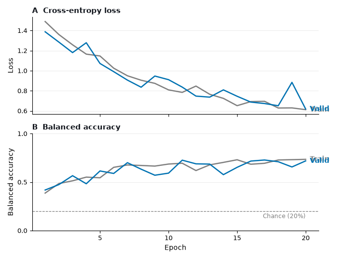
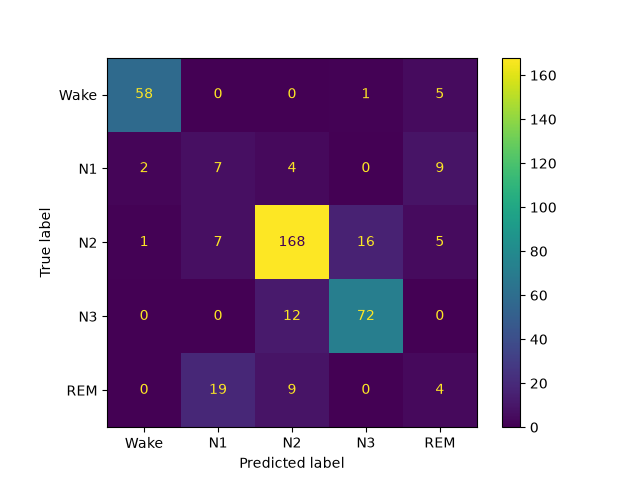
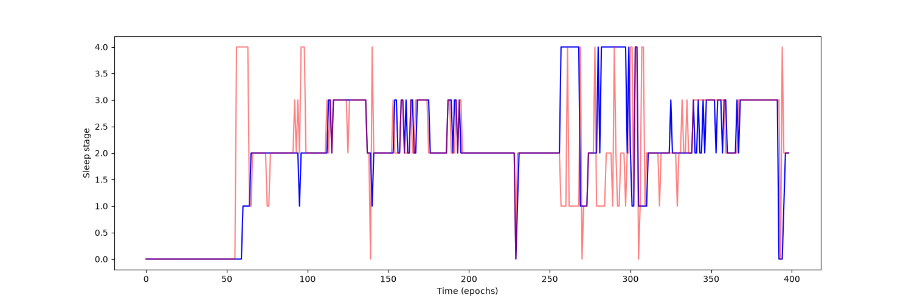

Note
Go to the end to download the full example code.
Sleep staging on the Sleep Physionet dataset using U-Sleep network#
Note
Please take a look at the simpler sleep staging example Sleep staging on the Sleep Physionet dataset using Chambon2018 network before going through this example. The current example uses a more complex architecture and a sequence-to-sequence (seq2seq) approach.
This tutorial shows how to train and test a sleep staging neural network with Braindecode. We adapt the U-Sleep approach of [1] to learn on sequences of EEG windows using the openly accessible Sleep Physionet dataset [2] [3].
# Authors: Theo Gnassounou <theo.gnassounou@inria.fr>
# Omar Chehab <l-emir-omar.chehab@inria.fr>
#
# License: BSD (3-clause)
Loading and preprocessing the dataset#
Loading#
First, we load the data using the
braindecode.datasets.sleep_physionet.SleepPhysionet class. We load
two recordings from two different individuals: we will use the first one to
train our network and the second one to evaluate performance (as in the MNE
sleep staging example).
from braindecode.datasets import SleepPhysionet
subject_ids = [0, 1]
crop = (0, 30 * 400) # we only keep 400 windows of 30s to speed example
dataset = SleepPhysionet(
subject_ids=subject_ids, recording_ids=[2], crop_wake_mins=30, crop=crop
)
0%| | 0.00/51.6M [00:00<?, ?B/s]
0%| | 82.9k/51.6M [00:00<01:07, 764kB/s]
0%| | 160k/51.6M [00:00<02:19, 369kB/s]
1%|▎ | 361k/51.6M [00:00<01:02, 815kB/s]
1%|▎ | 476k/51.6M [00:00<00:56, 906kB/s]
1%|▍ | 589k/51.6M [00:00<01:11, 714kB/s]
1%|▌ | 706k/51.6M [00:00<01:04, 793kB/s]
2%|▌ | 804k/51.6M [00:01<01:02, 819kB/s]
2%|▋ | 902k/51.6M [00:01<00:59, 854kB/s]
2%|▊ | 996k/51.6M [00:01<00:59, 847kB/s]
2%|▊ | 1.09M/51.6M [00:01<01:04, 781kB/s]
2%|▊ | 1.17M/51.6M [00:01<01:03, 790kB/s]
2%|▉ | 1.26M/51.6M [00:01<01:02, 805kB/s]
3%|█ | 1.36M/51.6M [00:01<00:59, 844kB/s]
3%|█ | 1.46M/51.6M [00:01<00:57, 867kB/s]
3%|█▏ | 1.57M/51.6M [00:01<00:54, 920kB/s]
3%|█▏ | 1.67M/51.6M [00:02<00:55, 906kB/s]
3%|█▎ | 1.77M/51.6M [00:02<00:56, 887kB/s]
4%|█▍ | 1.89M/51.6M [00:02<00:53, 935kB/s]
4%|█▍ | 1.98M/51.6M [00:02<00:55, 899kB/s]
4%|█▌ | 2.07M/51.6M [00:02<01:02, 793kB/s]
4%|█▌ | 2.15M/51.6M [00:02<01:07, 733kB/s]
4%|█▋ | 2.23M/51.6M [00:02<01:07, 729kB/s]
4%|█▋ | 2.30M/51.6M [00:02<01:10, 696kB/s]
5%|█▋ | 2.38M/51.6M [00:03<01:11, 690kB/s]
5%|█▊ | 2.48M/51.6M [00:03<01:08, 718kB/s]
5%|█▉ | 2.55M/51.6M [00:03<01:08, 715kB/s]
5%|█▉ | 2.64M/51.6M [00:03<01:04, 760kB/s]
5%|██ | 2.74M/51.6M [00:03<00:59, 815kB/s]
5%|██ | 2.84M/51.6M [00:03<00:57, 850kB/s]
6%|██▏ | 2.93M/51.6M [00:03<00:56, 854kB/s]
6%|██▏ | 3.03M/51.6M [00:03<00:56, 853kB/s]
6%|██▎ | 3.13M/51.6M [00:03<00:57, 848kB/s]
6%|██▎ | 3.22M/51.6M [00:04<00:58, 828kB/s]
6%|██▍ | 3.30M/51.6M [00:04<00:59, 811kB/s]
7%|██▍ | 3.39M/51.6M [00:04<00:58, 821kB/s]
7%|██▌ | 3.49M/51.6M [00:04<00:55, 861kB/s]
7%|██▋ | 3.59M/51.6M [00:04<00:54, 880kB/s]
7%|██▋ | 3.69M/51.6M [00:04<00:53, 897kB/s]
7%|██▊ | 3.80M/51.6M [00:04<00:49, 968kB/s]
8%|██▊ | 3.92M/51.6M [00:04<00:47, 1.00MB/s]
8%|██▉ | 4.03M/51.6M [00:04<00:45, 1.05MB/s]
8%|██▉ | 4.16M/51.6M [00:04<00:44, 1.07MB/s]
8%|███▏ | 4.27M/51.6M [00:05<00:49, 962kB/s]
9%|███▏ | 4.41M/51.6M [00:05<00:46, 1.02MB/s]
9%|███▏ | 4.51M/51.6M [00:05<00:45, 1.03MB/s]
9%|███▍ | 4.62M/51.6M [00:05<00:47, 999kB/s]
9%|███▍ | 4.72M/51.6M [00:05<00:47, 994kB/s]
9%|███▌ | 4.82M/51.6M [00:05<00:53, 879kB/s]
10%|███▌ | 4.91M/51.6M [00:05<00:54, 860kB/s]
10%|███▋ | 5.00M/51.6M [00:05<00:56, 820kB/s]
10%|███▋ | 5.08M/51.6M [00:06<00:56, 821kB/s]
10%|███▊ | 5.18M/51.6M [00:06<00:56, 819kB/s]
10%|███▉ | 5.29M/51.6M [00:06<00:52, 878kB/s]
10%|███▉ | 5.41M/51.6M [00:06<00:47, 971kB/s]
11%|████ | 5.52M/51.6M [00:06<00:46, 983kB/s]
11%|████ | 5.65M/51.6M [00:06<00:43, 1.06MB/s]
11%|████▏ | 5.77M/51.6M [00:06<00:43, 1.06MB/s]
11%|████▏ | 5.88M/51.6M [00:06<00:43, 1.06MB/s]
12%|████▍ | 5.98M/51.6M [00:06<00:46, 977kB/s]
12%|████▍ | 6.08M/51.6M [00:07<00:47, 956kB/s]
12%|████▌ | 6.18M/51.6M [00:07<00:57, 784kB/s]
12%|████▌ | 6.28M/51.6M [00:07<00:54, 826kB/s]
12%|████▋ | 6.36M/51.6M [00:07<00:55, 811kB/s]
12%|████▋ | 6.45M/51.6M [00:07<00:55, 815kB/s]
13%|████▊ | 6.53M/51.6M [00:07<01:02, 718kB/s]
13%|████▊ | 6.62M/51.6M [00:07<01:00, 745kB/s]
13%|████▉ | 6.70M/51.6M [00:07<01:00, 740kB/s]
13%|████▉ | 6.77M/51.6M [00:08<01:02, 715kB/s]
13%|█████ | 6.85M/51.6M [00:08<01:03, 705kB/s]
13%|█████ | 6.93M/51.6M [00:08<01:03, 703kB/s]
14%|█████▏ | 7.01M/51.6M [00:08<01:02, 711kB/s]
14%|█████▏ | 7.09M/51.6M [00:08<01:02, 708kB/s]
14%|█████▎ | 7.16M/51.6M [00:08<01:05, 680kB/s]
14%|█████▎ | 7.24M/51.6M [00:08<01:05, 678kB/s]
14%|█████▍ | 7.31M/51.6M [00:08<01:07, 652kB/s]
14%|█████▍ | 7.39M/51.6M [00:08<01:06, 665kB/s]
14%|█████▍ | 7.46M/51.6M [00:09<01:08, 649kB/s]
15%|█████▌ | 7.54M/51.6M [00:09<01:08, 644kB/s]
15%|█████▌ | 7.62M/51.6M [00:09<01:05, 674kB/s]
15%|█████▋ | 7.70M/51.6M [00:09<01:01, 710kB/s]
15%|█████▋ | 7.78M/51.6M [00:09<01:00, 727kB/s]
15%|█████▊ | 7.88M/51.6M [00:09<00:56, 780kB/s]
15%|█████▊ | 7.98M/51.6M [00:09<00:52, 832kB/s]
16%|█████▉ | 8.08M/51.6M [00:09<00:52, 830kB/s]
16%|██████ | 8.18M/51.6M [00:09<00:50, 867kB/s]
16%|██████ | 8.26M/51.6M [00:10<00:52, 819kB/s]
16%|██████▏ | 8.36M/51.6M [00:10<00:51, 845kB/s]
16%|██████▏ | 8.46M/51.6M [00:10<00:51, 843kB/s]
17%|██████▎ | 8.55M/51.6M [00:10<00:50, 858kB/s]
17%|██████▎ | 8.65M/51.6M [00:10<00:49, 872kB/s]
17%|██████▍ | 8.77M/51.6M [00:10<00:46, 920kB/s]
17%|██████▌ | 8.88M/51.6M [00:10<00:44, 959kB/s]
17%|██████▌ | 9.00M/51.6M [00:10<00:43, 977kB/s]
18%|██████▋ | 9.09M/51.6M [00:10<00:50, 834kB/s]
18%|██████▊ | 9.19M/51.6M [00:11<00:52, 808kB/s]
18%|██████▊ | 9.28M/51.6M [00:11<00:56, 747kB/s]
18%|██████▉ | 9.36M/51.6M [00:11<00:59, 713kB/s]
18%|██████▉ | 9.44M/51.6M [00:11<00:58, 720kB/s]
18%|███████ | 9.52M/51.6M [00:11<00:57, 732kB/s]
19%|███████ | 9.60M/51.6M [00:11<00:56, 742kB/s]
19%|███████▏ | 9.70M/51.6M [00:11<00:53, 782kB/s]
19%|███████▏ | 9.78M/51.6M [00:11<01:00, 693kB/s]
19%|███████▎ | 9.88M/51.6M [00:12<00:55, 755kB/s]
19%|███████▎ | 9.96M/51.6M [00:12<00:56, 742kB/s]
19%|███████▍ | 10.0M/51.6M [00:12<00:56, 739kB/s]
20%|███████▍ | 10.1M/51.6M [00:12<00:57, 724kB/s]
20%|███████▌ | 10.2M/51.6M [00:12<00:54, 760kB/s]
20%|███████▌ | 10.3M/51.6M [00:12<00:55, 751kB/s]
20%|███████▋ | 10.4M/51.6M [00:12<00:54, 763kB/s]
20%|███████▋ | 10.5M/51.6M [00:12<00:55, 744kB/s]
20%|███████▊ | 10.6M/51.6M [00:12<00:55, 736kB/s]
21%|███████▊ | 10.6M/51.6M [00:13<00:57, 714kB/s]
21%|███████▉ | 10.7M/51.6M [00:13<00:58, 703kB/s]
21%|███████▉ | 10.8M/51.6M [00:13<00:58, 699kB/s]
21%|████████ | 10.9M/51.6M [00:13<00:58, 700kB/s]
21%|████████ | 10.9M/51.6M [00:13<00:58, 690kB/s]
21%|████████ | 11.0M/51.6M [00:13<01:07, 602kB/s]
22%|████████▏ | 11.1M/51.6M [00:13<01:01, 657kB/s]
22%|████████▏ | 11.2M/51.6M [00:13<01:02, 645kB/s]
22%|████████▎ | 11.2M/51.6M [00:14<01:04, 631kB/s]
22%|████████▎ | 11.3M/51.6M [00:14<01:04, 628kB/s]
22%|████████▍ | 11.4M/51.6M [00:14<01:01, 653kB/s]
22%|████████▍ | 11.5M/51.6M [00:14<01:01, 656kB/s]
22%|████████▌ | 11.6M/51.6M [00:14<00:55, 721kB/s]
23%|████████▌ | 11.7M/51.6M [00:14<00:51, 781kB/s]
23%|████████▋ | 11.7M/51.6M [00:14<00:49, 813kB/s]
23%|████████▋ | 11.8M/51.6M [00:14<00:49, 797kB/s]
23%|████████▊ | 11.9M/51.6M [00:14<00:49, 794kB/s]
23%|████████▊ | 12.0M/51.6M [00:15<00:51, 765kB/s]
23%|████████▉ | 12.1M/51.6M [00:15<00:51, 765kB/s]
24%|████████▉ | 12.2M/51.6M [00:15<00:51, 768kB/s]
24%|█████████ | 12.3M/51.6M [00:15<00:50, 773kB/s]
24%|█████████ | 12.4M/51.6M [00:15<00:51, 764kB/s]
24%|█████████▏ | 12.5M/51.6M [00:15<00:50, 783kB/s]
24%|█████████▏ | 12.5M/51.6M [00:15<00:54, 712kB/s]
24%|█████████▎ | 12.6M/51.6M [00:15<00:56, 696kB/s]
25%|█████████▎ | 12.7M/51.6M [00:15<00:58, 663kB/s]
25%|█████████▍ | 12.8M/51.6M [00:16<01:01, 636kB/s]
25%|█████████▍ | 12.8M/51.6M [00:16<01:01, 634kB/s]
25%|█████████▍ | 12.9M/51.6M [00:16<01:01, 631kB/s]
25%|█████████▌ | 13.0M/51.6M [00:16<01:02, 621kB/s]
25%|█████████▌ | 13.0M/51.6M [00:16<01:02, 615kB/s]
25%|█████████▋ | 13.1M/51.6M [00:16<01:05, 590kB/s]
25%|█████████▋ | 13.2M/51.6M [00:16<01:06, 581kB/s]
26%|█████████▋ | 13.2M/51.6M [00:16<01:07, 570kB/s]
26%|█████████▊ | 13.3M/51.6M [00:17<01:07, 571kB/s]
26%|█████████▊ | 13.4M/51.6M [00:17<01:08, 555kB/s]
26%|█████████▉ | 13.4M/51.6M [00:17<01:08, 556kB/s]
26%|█████████▉ | 13.5M/51.6M [00:17<01:05, 578kB/s]
26%|█████████▉ | 13.6M/51.6M [00:17<01:03, 603kB/s]
26%|██████████ | 13.6M/51.6M [00:17<01:02, 606kB/s]
27%|██████████ | 13.7M/51.6M [00:17<00:57, 656kB/s]
27%|██████████▏ | 13.8M/51.6M [00:17<00:52, 722kB/s]
27%|██████████▏ | 13.9M/51.6M [00:17<00:49, 755kB/s]
27%|██████████▎ | 14.0M/51.6M [00:18<00:50, 743kB/s]
27%|██████████▎ | 14.1M/51.6M [00:18<00:51, 736kB/s]
27%|██████████▍ | 14.1M/51.6M [00:18<00:53, 700kB/s]
28%|██████████▍ | 14.2M/51.6M [00:18<00:55, 674kB/s]
28%|██████████▌ | 14.3M/51.6M [00:18<00:56, 655kB/s]
28%|██████████▌ | 14.4M/51.6M [00:18<00:58, 637kB/s]
28%|██████████▌ | 14.4M/51.6M [00:18<00:59, 624kB/s]
28%|██████████▋ | 14.5M/51.6M [00:18<00:55, 671kB/s]
28%|██████████▋ | 14.6M/51.6M [00:18<00:51, 724kB/s]
28%|██████████▊ | 14.7M/51.6M [00:19<00:46, 786kB/s]
29%|██████████▉ | 14.8M/51.6M [00:19<00:44, 835kB/s]
29%|██████████▉ | 14.9M/51.6M [00:19<00:41, 890kB/s]
29%|███████████ | 15.0M/51.6M [00:19<00:38, 946kB/s]
29%|███████████▏ | 15.1M/51.6M [00:19<00:39, 930kB/s]
29%|███████████▏ | 15.2M/51.6M [00:19<00:39, 931kB/s]
30%|███████████▎ | 15.3M/51.6M [00:19<00:40, 899kB/s]
30%|███████████▎ | 15.4M/51.6M [00:19<00:39, 908kB/s]
30%|███████████▍ | 15.5M/51.6M [00:19<00:39, 925kB/s]
30%|███████████▍ | 15.6M/51.6M [00:20<00:38, 931kB/s]
30%|███████████▌ | 15.7M/51.6M [00:20<00:37, 955kB/s]
31%|███████████▋ | 15.8M/51.6M [00:20<00:37, 964kB/s]
31%|███████████▋ | 15.9M/51.6M [00:20<00:37, 951kB/s]
31%|███████████▌ | 16.1M/51.6M [00:20<00:35, 1.01MB/s]
31%|███████████▉ | 16.2M/51.6M [00:20<00:36, 975kB/s]
32%|███████████▉ | 16.3M/51.6M [00:20<00:43, 822kB/s]
32%|████████████ | 16.4M/51.6M [00:20<00:41, 843kB/s]
32%|████████████ | 16.5M/51.6M [00:20<00:43, 799kB/s]
32%|████████████▏ | 16.5M/51.6M [00:21<00:44, 785kB/s]
32%|████████████▏ | 16.6M/51.6M [00:21<00:46, 757kB/s]
32%|████████████▎ | 16.7M/51.6M [00:21<00:47, 735kB/s]
33%|████████████▎ | 16.8M/51.6M [00:21<00:44, 786kB/s]
33%|████████████▍ | 16.9M/51.6M [00:21<00:41, 837kB/s]
33%|████████████▌ | 17.0M/51.6M [00:21<00:38, 898kB/s]
33%|████████████▌ | 17.1M/51.6M [00:21<00:37, 931kB/s]
33%|████████████▋ | 17.2M/51.6M [00:21<00:34, 984kB/s]
34%|████████████▍ | 17.4M/51.6M [00:21<00:33, 1.02MB/s]
34%|████████████▌ | 17.5M/51.6M [00:22<00:32, 1.05MB/s]
34%|████████████▌ | 17.6M/51.6M [00:22<00:31, 1.09MB/s]
34%|████████████▋ | 17.7M/51.6M [00:22<00:30, 1.10MB/s]
35%|████████████▊ | 17.8M/51.6M [00:22<00:31, 1.08MB/s]
35%|████████████▊ | 17.9M/51.6M [00:22<00:32, 1.03MB/s]
35%|████████████▉ | 18.0M/51.6M [00:22<00:33, 1.02MB/s]
35%|█████████████▎ | 18.1M/51.6M [00:22<00:33, 988kB/s]
35%|█████████████▍ | 18.2M/51.6M [00:22<00:39, 856kB/s]
36%|█████████████▍ | 18.3M/51.6M [00:22<00:38, 872kB/s]
36%|█████████████▌ | 18.4M/51.6M [00:23<00:38, 862kB/s]
36%|█████████████▋ | 18.5M/51.6M [00:23<00:38, 857kB/s]
36%|█████████████▋ | 18.6M/51.6M [00:23<00:41, 791kB/s]
36%|█████████████▊ | 18.7M/51.6M [00:23<00:52, 626kB/s]
36%|█████████████▊ | 18.7M/51.6M [00:23<00:51, 635kB/s]
36%|█████████████▊ | 18.8M/51.6M [00:23<00:52, 628kB/s]
37%|█████████████▉ | 18.9M/51.6M [00:23<01:11, 461kB/s]
37%|█████████████▉ | 18.9M/51.6M [00:24<01:11, 457kB/s]
37%|█████████████▉ | 19.0M/51.6M [00:24<01:20, 407kB/s]
37%|██████████████ | 19.0M/51.6M [00:24<01:18, 413kB/s]
37%|██████████████ | 19.1M/51.6M [00:24<01:17, 420kB/s]
37%|██████████████ | 19.2M/51.6M [00:24<01:13, 439kB/s]
37%|██████████████▏ | 19.2M/51.6M [00:24<01:14, 433kB/s]
37%|██████████████▏ | 19.3M/51.6M [00:24<01:15, 430kB/s]
37%|██████████████▏ | 19.3M/51.6M [00:24<01:13, 438kB/s]
37%|██████████████▏ | 19.4M/51.6M [00:25<01:13, 437kB/s]
38%|██████████████▎ | 19.4M/51.6M [00:25<01:09, 466kB/s]
38%|██████████████▎ | 19.5M/51.6M [00:25<01:07, 479kB/s]
38%|██████████████▍ | 19.5M/51.6M [00:25<01:01, 523kB/s]
38%|██████████████▍ | 19.6M/51.6M [00:25<00:59, 540kB/s]
38%|██████████████▍ | 19.7M/51.6M [00:25<00:56, 569kB/s]
38%|██████████████▌ | 19.8M/51.6M [00:25<00:58, 543kB/s]
38%|██████████████▌ | 19.8M/51.6M [00:25<01:00, 530kB/s]
38%|██████████████▌ | 19.9M/51.6M [00:26<01:04, 494kB/s]
39%|██████████████▋ | 19.9M/51.6M [00:26<01:05, 482kB/s]
39%|██████████████▋ | 20.0M/51.6M [00:26<01:10, 452kB/s]
39%|██████████████▋ | 20.0M/51.6M [00:26<01:11, 443kB/s]
39%|██████████████▊ | 20.1M/51.6M [00:26<01:09, 455kB/s]
39%|██████████████▊ | 20.1M/51.6M [00:26<01:07, 469kB/s]
39%|██████████████▊ | 20.2M/51.6M [00:26<01:00, 515kB/s]
39%|██████████████▉ | 20.3M/51.6M [00:26<00:58, 532kB/s]
39%|██████████████▉ | 20.3M/51.6M [00:27<00:59, 529kB/s]
40%|███████████████ | 20.4M/51.6M [00:27<01:00, 514kB/s]
40%|███████████████ | 20.5M/51.6M [00:27<01:00, 516kB/s]
40%|███████████████ | 20.5M/51.6M [00:27<01:02, 499kB/s]
40%|███████████████▏ | 20.6M/51.6M [00:27<01:04, 481kB/s]
40%|███████████████▏ | 20.6M/51.6M [00:27<01:05, 470kB/s]
40%|███████████████▏ | 20.7M/51.6M [00:27<01:06, 463kB/s]
40%|███████████████▏ | 20.7M/51.6M [00:27<01:12, 426kB/s]
40%|███████████████▎ | 20.8M/51.6M [00:27<01:11, 433kB/s]
40%|███████████████▎ | 20.8M/51.6M [00:28<01:13, 420kB/s]
40%|███████████████▎ | 20.9M/51.6M [00:28<01:13, 421kB/s]
41%|███████████████▍ | 20.9M/51.6M [00:28<01:06, 465kB/s]
41%|███████████████▍ | 21.0M/51.6M [00:28<01:06, 459kB/s]
41%|███████████████▍ | 21.0M/51.6M [00:28<01:19, 386kB/s]
41%|███████████████▍ | 21.1M/51.6M [00:28<01:26, 353kB/s]
41%|███████████████▌ | 21.1M/51.6M [00:28<01:26, 354kB/s]
41%|███████████████▌ | 21.1M/51.6M [00:28<01:25, 356kB/s]
41%|███████████████▌ | 21.2M/51.6M [00:29<01:20, 377kB/s]
41%|███████████████▋ | 21.2M/51.6M [00:29<01:17, 394kB/s]
41%|███████████████▋ | 21.3M/51.6M [00:29<01:07, 447kB/s]
41%|███████████████▋ | 21.4M/51.6M [00:29<01:01, 489kB/s]
42%|███████████████▊ | 21.4M/51.6M [00:29<00:54, 553kB/s]
42%|███████████████▊ | 21.5M/51.6M [00:29<00:48, 615kB/s]
42%|███████████████▉ | 21.6M/51.6M [00:29<00:45, 667kB/s]
42%|███████████████▉ | 21.7M/51.6M [00:29<00:42, 702kB/s]
42%|████████████████ | 21.8M/51.6M [00:29<00:48, 615kB/s]
42%|████████████████ | 21.8M/51.6M [00:30<00:48, 619kB/s]
42%|████████████████▏ | 21.9M/51.6M [00:30<00:57, 513kB/s]
43%|████████████████▏ | 22.0M/51.6M [00:30<00:54, 543kB/s]
43%|████████████████▏ | 22.0M/51.6M [00:30<00:56, 526kB/s]
43%|████████████████▎ | 22.1M/51.6M [00:30<00:54, 545kB/s]
43%|████████████████▎ | 22.2M/51.6M [00:30<00:52, 564kB/s]
43%|████████████████▎ | 22.2M/51.6M [00:30<00:50, 580kB/s]
43%|████████████████▍ | 22.3M/51.6M [00:30<00:56, 521kB/s]
43%|████████████████▍ | 22.4M/51.6M [00:31<00:52, 555kB/s]
43%|████████████████▌ | 22.4M/51.6M [00:31<00:53, 546kB/s]
44%|████████████████▌ | 22.5M/51.6M [00:31<01:07, 434kB/s]
44%|████████████████▌ | 22.5M/51.6M [00:31<01:15, 387kB/s]
44%|████████████████▌ | 22.6M/51.6M [00:31<01:21, 355kB/s]
44%|████████████████▋ | 22.6M/51.6M [00:31<01:23, 348kB/s]
44%|████████████████▋ | 22.7M/51.6M [00:31<01:15, 384kB/s]
44%|████████████████▋ | 22.7M/51.6M [00:32<01:07, 428kB/s]
44%|████████████████▊ | 22.8M/51.6M [00:32<01:00, 474kB/s]
44%|████████████████▊ | 22.9M/51.6M [00:32<00:54, 532kB/s]
44%|████████████████▉ | 23.0M/51.6M [00:32<00:48, 588kB/s]
45%|████████████████▉ | 23.0M/51.6M [00:32<00:45, 626kB/s]
45%|█████████████████ | 23.1M/51.6M [00:32<00:42, 676kB/s]
45%|█████████████████ | 23.2M/51.6M [00:32<00:38, 741kB/s]
45%|█████████████████▏ | 23.3M/51.6M [00:32<00:35, 796kB/s]
45%|█████████████████▏ | 23.4M/51.6M [00:32<00:32, 871kB/s]
46%|█████████████████▎ | 23.5M/51.6M [00:33<00:30, 918kB/s]
46%|█████████████████▍ | 23.6M/51.6M [00:33<00:30, 931kB/s]
46%|█████████████████▍ | 23.7M/51.6M [00:33<00:33, 828kB/s]
46%|█████████████████▌ | 23.8M/51.6M [00:33<00:32, 857kB/s]
46%|█████████████████▌ | 23.9M/51.6M [00:33<00:32, 849kB/s]
47%|█████████████████▋ | 24.0M/51.6M [00:33<00:33, 825kB/s]
47%|█████████████████▋ | 24.1M/51.6M [00:33<00:34, 798kB/s]
47%|█████████████████▊ | 24.2M/51.6M [00:33<00:34, 791kB/s]
47%|█████████████████▊ | 24.3M/51.6M [00:33<00:35, 774kB/s]
47%|█████████████████▉ | 24.3M/51.6M [00:34<00:35, 772kB/s]
47%|█████████████████▉ | 24.4M/51.6M [00:34<00:34, 778kB/s]
47%|██████████████████ | 24.5M/51.6M [00:34<00:34, 785kB/s]
48%|██████████████████ | 24.6M/51.6M [00:34<00:35, 764kB/s]
48%|██████████████████▏ | 24.7M/51.6M [00:34<00:39, 687kB/s]
48%|██████████████████▏ | 24.8M/51.6M [00:34<00:36, 733kB/s]
48%|██████████████████▎ | 24.8M/51.6M [00:34<00:36, 732kB/s]
48%|██████████████████▎ | 24.9M/51.6M [00:34<00:36, 730kB/s]
48%|██████████████████▍ | 25.0M/51.6M [00:34<00:37, 719kB/s]
49%|██████████████████▍ | 25.1M/51.6M [00:35<00:39, 665kB/s]
49%|██████████████████▌ | 25.2M/51.6M [00:35<00:38, 679kB/s]
49%|██████████████████▌ | 25.2M/51.6M [00:35<00:38, 686kB/s]
49%|██████████████████▌ | 25.3M/51.6M [00:35<00:38, 683kB/s]
49%|██████████████████▋ | 25.4M/51.6M [00:35<00:36, 728kB/s]
49%|██████████████████▊ | 25.5M/51.6M [00:35<00:34, 768kB/s]
50%|██████████████████▊ | 25.6M/51.6M [00:35<00:32, 813kB/s]
50%|██████████████████▉ | 25.7M/51.6M [00:35<00:32, 803kB/s]
50%|██████████████████▉ | 25.8M/51.6M [00:35<00:32, 795kB/s]
50%|███████████████████ | 25.8M/51.6M [00:36<00:33, 780kB/s]
50%|███████████████████ | 25.9M/51.6M [00:36<00:32, 780kB/s]
50%|███████████████████▏ | 26.0M/51.6M [00:36<00:32, 786kB/s]
51%|███████████████████▏ | 26.1M/51.6M [00:36<00:32, 795kB/s]
51%|███████████████████▎ | 26.2M/51.6M [00:36<00:32, 792kB/s]
51%|███████████████████▎ | 26.3M/51.6M [00:36<00:32, 789kB/s]
51%|███████████████████▍ | 26.3M/51.6M [00:36<00:33, 761kB/s]
51%|███████████████████▍ | 26.4M/51.6M [00:36<00:33, 747kB/s]
51%|███████████████████▌ | 26.5M/51.6M [00:36<00:34, 739kB/s]
52%|███████████████████▌ | 26.6M/51.6M [00:37<00:33, 751kB/s]
52%|███████████████████▋ | 26.7M/51.6M [00:37<00:32, 775kB/s]
52%|███████████████████▋ | 26.8M/51.6M [00:37<00:32, 763kB/s]
52%|███████████████████▊ | 26.9M/51.6M [00:37<00:29, 849kB/s]
52%|███████████████████▊ | 27.0M/51.6M [00:37<00:29, 842kB/s]
52%|███████████████████▉ | 27.1M/51.6M [00:37<00:30, 798kB/s]
53%|███████████████████▉ | 27.1M/51.6M [00:37<00:31, 769kB/s]
53%|████████████████████ | 27.2M/51.6M [00:37<00:34, 705kB/s]
53%|████████████████████ | 27.3M/51.6M [00:38<00:34, 704kB/s]
53%|████████████████████▏ | 27.4M/51.6M [00:38<00:35, 681kB/s]
53%|████████████████████▏ | 27.4M/51.6M [00:38<00:38, 621kB/s]
53%|████████████████████▎ | 27.5M/51.6M [00:38<00:38, 630kB/s]
53%|████████████████████▎ | 27.6M/51.6M [00:38<00:37, 646kB/s]
54%|████████████████████▎ | 27.7M/51.6M [00:38<00:37, 643kB/s]
54%|████████████████████▍ | 27.7M/51.6M [00:38<00:36, 650kB/s]
54%|████████████████████▍ | 27.8M/51.6M [00:38<00:35, 679kB/s]
54%|████████████████████▌ | 27.9M/51.6M [00:38<00:37, 640kB/s]
54%|████████████████████▌ | 28.0M/51.6M [00:39<00:40, 590kB/s]
54%|████████████████████▌ | 28.0M/51.6M [00:39<00:45, 522kB/s]
54%|████████████████████▋ | 28.1M/51.6M [00:39<00:40, 575kB/s]
55%|████████████████████▋ | 28.2M/51.6M [00:39<00:41, 562kB/s]
55%|████████████████████▊ | 28.2M/51.6M [00:39<00:41, 559kB/s]
55%|████████████████████▊ | 28.3M/51.6M [00:39<00:45, 509kB/s]
55%|████████████████████▉ | 28.4M/51.6M [00:39<00:43, 530kB/s]
55%|████████████████████▉ | 28.4M/51.6M [00:40<00:44, 522kB/s]
55%|████████████████████▉ | 28.5M/51.6M [00:40<00:44, 520kB/s]
55%|█████████████████████ | 28.6M/51.6M [00:40<00:43, 530kB/s]
55%|█████████████████████ | 28.6M/51.6M [00:40<00:39, 577kB/s]
56%|█████████████████████▏ | 28.7M/51.6M [00:40<00:46, 493kB/s]
56%|█████████████████████▏ | 28.8M/51.6M [00:40<00:44, 517kB/s]
56%|█████████████████████▏ | 28.8M/51.6M [00:40<00:46, 492kB/s]
56%|█████████████████████▎ | 28.9M/51.6M [00:40<00:46, 484kB/s]
56%|█████████████████████▎ | 28.9M/51.6M [00:41<00:50, 451kB/s]
56%|█████████████████████▎ | 29.0M/51.6M [00:41<00:51, 437kB/s]
56%|█████████████████████▎ | 29.0M/51.6M [00:41<00:52, 428kB/s]
56%|█████████████████████▍ | 29.1M/51.6M [00:41<00:50, 443kB/s]
56%|█████████████████████▍ | 29.1M/51.6M [00:41<00:50, 448kB/s]
57%|█████████████████████▍ | 29.2M/51.6M [00:41<00:53, 421kB/s]
57%|█████████████████████▌ | 29.2M/51.6M [00:41<00:50, 440kB/s]
57%|█████████████████████▌ | 29.3M/51.6M [00:41<00:50, 442kB/s]
57%|█████████████████████▌ | 29.4M/51.6M [00:42<00:47, 472kB/s]
57%|█████████████████████▋ | 29.4M/51.6M [00:42<00:47, 472kB/s]
57%|█████████████████████▋ | 29.5M/51.6M [00:42<00:45, 491kB/s]
57%|█████████████████████▋ | 29.5M/51.6M [00:42<00:52, 423kB/s]
57%|█████████████████████▊ | 29.6M/51.6M [00:42<00:44, 495kB/s]
57%|█████████████████████▊ | 29.7M/51.6M [00:42<00:43, 504kB/s]
58%|█████████████████████▉ | 29.7M/51.6M [00:42<00:42, 520kB/s]
58%|█████████████████████▉ | 29.8M/51.6M [00:42<00:38, 566kB/s]
58%|█████████████████████▉ | 29.9M/51.6M [00:43<00:39, 552kB/s]
58%|██████████████████████ | 29.9M/51.6M [00:43<00:42, 512kB/s]
58%|██████████████████████ | 30.0M/51.6M [00:43<00:44, 485kB/s]
58%|██████████████████████ | 30.0M/51.6M [00:43<00:45, 472kB/s]
58%|██████████████████████▏ | 30.1M/51.6M [00:43<00:46, 467kB/s]
58%|██████████████████████▏ | 30.2M/51.6M [00:43<00:44, 478kB/s]
59%|██████████████████████▎ | 30.2M/51.6M [00:43<00:42, 502kB/s]
59%|██████████████████████▎ | 30.3M/51.6M [00:43<00:45, 467kB/s]
59%|██████████████████████▎ | 30.4M/51.6M [00:44<00:42, 502kB/s]
59%|██████████████████████▍ | 30.4M/51.6M [00:44<00:41, 510kB/s]
59%|██████████████████████▍ | 30.5M/51.6M [00:44<00:40, 516kB/s]
59%|██████████████████████▍ | 30.6M/51.6M [00:44<00:39, 539kB/s]
59%|██████████████████████▌ | 30.6M/51.6M [00:44<00:37, 556kB/s]
59%|██████████████████████▌ | 30.7M/51.6M [00:44<00:37, 555kB/s]
60%|██████████████████████▋ | 30.8M/51.6M [00:44<00:39, 530kB/s]
60%|██████████████████████▋ | 30.8M/51.6M [00:44<00:37, 553kB/s]
60%|██████████████████████▋ | 30.9M/51.6M [00:44<00:36, 572kB/s]
60%|██████████████████████▊ | 31.0M/51.6M [00:45<00:35, 578kB/s]
60%|██████████████████████▊ | 31.0M/51.6M [00:45<00:37, 547kB/s]
60%|██████████████████████▊ | 31.1M/51.6M [00:45<00:38, 528kB/s]
60%|██████████████████████▉ | 31.1M/51.6M [00:45<00:41, 492kB/s]
60%|██████████████████████▉ | 31.2M/51.6M [00:45<00:44, 463kB/s]
60%|██████████████████████▉ | 31.2M/51.6M [00:45<00:45, 448kB/s]
61%|███████████████████████ | 31.3M/51.6M [00:45<00:52, 384kB/s]
61%|███████████████████████ | 31.3M/51.6M [00:45<00:50, 399kB/s]
61%|███████████████████████ | 31.4M/51.6M [00:46<00:51, 391kB/s]
61%|███████████████████████▏ | 31.4M/51.6M [00:46<00:59, 340kB/s]
61%|███████████████████████▏ | 31.5M/51.6M [00:46<00:53, 378kB/s]
61%|███████████████████████▏ | 31.5M/51.6M [00:46<00:52, 386kB/s]
61%|███████████████████████▎ | 31.6M/51.6M [00:46<00:49, 408kB/s]
61%|███████████████████████▎ | 31.7M/51.6M [00:46<00:44, 450kB/s]
61%|███████████████████████▎ | 31.7M/51.6M [00:46<00:43, 460kB/s]
62%|███████████████████████▍ | 31.8M/51.6M [00:47<00:40, 494kB/s]
62%|███████████████████████▍ | 31.8M/51.6M [00:47<00:40, 485kB/s]
62%|███████████████████████▍ | 31.9M/51.6M [00:47<00:41, 470kB/s]
62%|███████████████████████▌ | 31.9M/51.6M [00:47<00:43, 456kB/s]
62%|███████████████████████▌ | 32.0M/51.6M [00:47<00:44, 443kB/s]
62%|███████████████████████▌ | 32.0M/51.6M [00:47<00:45, 435kB/s]
62%|███████████████████████▌ | 32.1M/51.6M [00:47<00:46, 424kB/s]
62%|███████████████████████▋ | 32.1M/51.6M [00:47<00:47, 411kB/s]
62%|███████████████████████▋ | 32.2M/51.6M [00:47<00:49, 394kB/s]
62%|███████████████████████▋ | 32.2M/51.6M [00:48<00:49, 391kB/s]
63%|███████████████████████▊ | 32.3M/51.6M [00:48<00:48, 396kB/s]
63%|███████████████████████▊ | 32.3M/51.6M [00:48<00:46, 414kB/s]
63%|███████████████████████▊ | 32.4M/51.6M [00:48<00:43, 440kB/s]
63%|███████████████████████▉ | 32.5M/51.6M [00:48<00:40, 475kB/s]
63%|███████████████████████▉ | 32.5M/51.6M [00:48<00:37, 514kB/s]
63%|███████████████████████▉ | 32.6M/51.6M [00:48<00:43, 439kB/s]
63%|████████████████████████ | 32.6M/51.6M [00:49<00:48, 389kB/s]
63%|████████████████████████ | 32.7M/51.6M [00:49<00:42, 447kB/s]
63%|████████████████████████ | 32.8M/51.6M [00:49<00:42, 440kB/s]
64%|████████████████████████▏ | 32.8M/51.6M [00:49<00:41, 451kB/s]
64%|████████████████████████▏ | 32.9M/51.6M [00:49<00:40, 460kB/s]
64%|████████████████████████▏ | 32.9M/51.6M [00:49<00:41, 452kB/s]
64%|████████████████████████▎ | 33.0M/51.6M [00:49<00:46, 400kB/s]
64%|████████████████████████▎ | 33.0M/51.6M [00:49<00:48, 382kB/s]
64%|████████████████████████▎ | 33.1M/51.6M [00:50<00:48, 381kB/s]
64%|████████████████████████▎ | 33.1M/51.6M [00:50<00:50, 366kB/s]
64%|████████████████████████▍ | 33.1M/51.6M [00:50<00:48, 381kB/s]
64%|████████████████████████▍ | 33.2M/51.6M [00:50<00:43, 425kB/s]
64%|████████████████████████▍ | 33.3M/51.6M [00:50<00:40, 448kB/s]
65%|████████████████████████▌ | 33.3M/51.6M [00:50<00:41, 438kB/s]
65%|████████████████████████▌ | 33.4M/51.6M [00:50<00:41, 436kB/s]
65%|████████████████████████▌ | 33.4M/51.6M [00:50<00:40, 450kB/s]
65%|████████████████████████▋ | 33.5M/51.6M [00:51<00:38, 471kB/s]
65%|████████████████████████▋ | 33.6M/51.6M [00:51<00:35, 504kB/s]
65%|████████████████████████▋ | 33.6M/51.6M [00:51<00:35, 504kB/s]
65%|████████████████████████▊ | 33.7M/51.6M [00:51<00:36, 495kB/s]
65%|████████████████████████▊ | 33.7M/51.6M [00:51<00:36, 496kB/s]
65%|████████████████████████▊ | 33.8M/51.6M [00:51<00:35, 506kB/s]
66%|████████████████████████▉ | 33.8M/51.6M [00:51<00:35, 507kB/s]
66%|████████████████████████▉ | 33.9M/51.6M [00:51<00:32, 538kB/s]
66%|█████████████████████████ | 34.0M/51.6M [00:51<00:31, 567kB/s]
66%|█████████████████████████ | 34.0M/51.6M [00:51<00:28, 616kB/s]
66%|█████████████████████████ | 34.1M/51.6M [00:52<00:26, 659kB/s]
66%|█████████████████████████▏ | 34.2M/51.6M [00:52<00:25, 680kB/s]
66%|█████████████████████████▏ | 34.3M/51.6M [00:52<00:28, 618kB/s]
67%|█████████████████████████▎ | 34.4M/51.6M [00:52<00:27, 638kB/s]
67%|█████████████████████████▎ | 34.4M/51.6M [00:52<00:28, 595kB/s]
67%|█████████████████████████▍ | 34.5M/51.6M [00:52<00:29, 573kB/s]
67%|█████████████████████████▍ | 34.6M/51.6M [00:52<00:30, 568kB/s]
67%|█████████████████████████▍ | 34.6M/51.6M [00:52<00:30, 556kB/s]
67%|█████████████████████████▌ | 34.7M/51.6M [00:53<00:30, 547kB/s]
67%|█████████████████████████▌ | 34.8M/51.6M [00:53<00:31, 538kB/s]
67%|█████████████████████████▌ | 34.8M/51.6M [00:53<00:31, 538kB/s]
68%|█████████████████████████▋ | 34.9M/51.6M [00:53<00:32, 518kB/s]
68%|█████████████████████████▋ | 34.9M/51.6M [00:53<00:31, 533kB/s]
68%|█████████████████████████▊ | 35.0M/51.6M [00:53<00:31, 521kB/s]
68%|█████████████████████████▊ | 35.0M/51.6M [00:53<00:31, 531kB/s]
68%|█████████████████████████▊ | 35.1M/51.6M [00:53<00:29, 559kB/s]
68%|█████████████████████████▉ | 35.2M/51.6M [00:54<00:33, 491kB/s]
68%|█████████████████████████▉ | 35.3M/51.6M [00:54<00:29, 559kB/s]
68%|██████████████████████████ | 35.3M/51.6M [00:54<00:28, 563kB/s]
69%|██████████████████████████ | 35.4M/51.6M [00:54<00:28, 569kB/s]
69%|██████████████████████████ | 35.5M/51.6M [00:54<00:27, 598kB/s]
69%|██████████████████████████▏ | 35.5M/51.6M [00:54<00:27, 588kB/s]
69%|██████████████████████████▏ | 35.6M/51.6M [00:54<00:27, 584kB/s]
69%|██████████████████████████▏ | 35.7M/51.6M [00:54<00:28, 561kB/s]
69%|██████████████████████████▎ | 35.7M/51.6M [00:54<00:28, 549kB/s]
69%|██████████████████████████▎ | 35.8M/51.6M [00:55<00:33, 479kB/s]
69%|██████████████████████████▎ | 35.8M/51.6M [00:55<00:33, 472kB/s]
70%|██████████████████████████▍ | 35.9M/51.6M [00:55<00:32, 488kB/s]
70%|██████████████████████████▍ | 35.9M/51.6M [00:55<00:30, 517kB/s]
70%|██████████████████████████▌ | 36.0M/51.6M [00:55<00:27, 567kB/s]
70%|██████████████████████████▌ | 36.1M/51.6M [00:55<00:25, 611kB/s]
70%|██████████████████████████▋ | 36.2M/51.6M [00:55<00:25, 606kB/s]
70%|██████████████████████████▋ | 36.2M/51.6M [00:55<00:26, 574kB/s]
70%|██████████████████████████▋ | 36.3M/51.6M [00:56<00:27, 561kB/s]
70%|██████████████████████████▊ | 36.4M/51.6M [00:56<00:29, 522kB/s]
71%|██████████████████████████▊ | 36.4M/51.6M [00:56<00:29, 508kB/s]
71%|██████████████████████████▊ | 36.5M/51.6M [00:56<00:31, 476kB/s]
71%|██████████████████████████▉ | 36.5M/51.6M [00:56<00:34, 443kB/s]
71%|██████████████████████████▉ | 36.6M/51.6M [00:56<00:36, 415kB/s]
71%|██████████████████████████▉ | 36.6M/51.6M [00:56<00:35, 429kB/s]
71%|██████████████████████████▉ | 36.7M/51.6M [00:56<00:33, 441kB/s]
71%|███████████████████████████ | 36.7M/51.6M [00:56<00:32, 458kB/s]
71%|███████████████████████████ | 36.8M/51.6M [00:57<00:32, 459kB/s]
71%|███████████████████████████ | 36.8M/51.6M [00:57<00:31, 472kB/s]
71%|███████████████████████████▏ | 36.9M/51.6M [00:57<00:31, 472kB/s]
72%|███████████████████████████▏ | 36.9M/51.6M [00:57<00:30, 489kB/s]
72%|███████████████████████████▏ | 37.0M/51.6M [00:57<00:28, 518kB/s]
72%|███████████████████████████▎ | 37.1M/51.6M [00:57<00:26, 551kB/s]
72%|███████████████████████████▎ | 37.1M/51.6M [00:57<00:25, 568kB/s]
72%|███████████████████████████▍ | 37.2M/51.6M [00:57<00:24, 589kB/s]
72%|███████████████████████████▍ | 37.3M/51.6M [00:58<00:25, 567kB/s]
72%|███████████████████████████▍ | 37.4M/51.6M [00:58<00:22, 621kB/s]
72%|███████████████████████████▌ | 37.4M/51.6M [00:58<00:22, 618kB/s]
73%|███████████████████████████▌ | 37.5M/51.6M [00:58<00:22, 620kB/s]
73%|███████████████████████████▋ | 37.6M/51.6M [00:58<00:22, 616kB/s]
73%|███████████████████████████▋ | 37.6M/51.6M [00:58<00:23, 598kB/s]
73%|███████████████████████████▋ | 37.7M/51.6M [00:58<00:22, 610kB/s]
73%|███████████████████████████▊ | 37.7M/51.6M [00:58<00:23, 595kB/s]
73%|███████████████████████████▊ | 37.8M/51.6M [00:58<00:23, 588kB/s]
73%|███████████████████████████▉ | 37.9M/51.6M [00:59<00:22, 613kB/s]
74%|███████████████████████████▉ | 38.0M/51.6M [00:59<00:21, 646kB/s]
74%|████████████████████████████ | 38.1M/51.6M [00:59<00:20, 674kB/s]
74%|████████████████████████████ | 38.1M/51.6M [00:59<00:20, 672kB/s]
74%|████████████████████████████▏ | 38.2M/51.6M [00:59<00:19, 683kB/s]
74%|████████████████████████████▏ | 38.3M/51.6M [00:59<00:23, 579kB/s]
74%|████████████████████████████▏ | 38.4M/51.6M [00:59<00:20, 662kB/s]
74%|████████████████████████████▎ | 38.4M/51.6M [00:59<00:20, 645kB/s]
75%|████████████████████████████▎ | 38.5M/51.6M [00:59<00:20, 648kB/s]
75%|████████████████████████████▍ | 38.6M/51.6M [01:00<00:20, 631kB/s]
75%|████████████████████████████▍ | 38.7M/51.6M [01:00<00:20, 635kB/s]
75%|████████████████████████████▌ | 38.7M/51.6M [01:00<00:21, 614kB/s]
75%|████████████████████████████▌ | 38.8M/51.6M [01:00<00:21, 592kB/s]
75%|████████████████████████████▌ | 38.8M/51.6M [01:00<00:24, 528kB/s]
75%|████████████████████████████▋ | 38.9M/51.6M [01:00<00:25, 501kB/s]
75%|████████████████████████████▋ | 39.0M/51.6M [01:00<00:25, 501kB/s]
76%|████████████████████████████▋ | 39.0M/51.6M [01:00<00:25, 487kB/s]
76%|████████████████████████████▊ | 39.1M/51.6M [01:01<00:25, 484kB/s]
76%|████████████████████████████▊ | 39.1M/51.6M [01:01<00:26, 470kB/s]
76%|████████████████████████████▊ | 39.2M/51.6M [01:01<00:26, 470kB/s]
76%|████████████████████████████▊ | 39.2M/51.6M [01:01<00:25, 478kB/s]
76%|████████████████████████████▉ | 39.3M/51.6M [01:01<00:30, 411kB/s]
76%|████████████████████████████▉ | 39.3M/51.6M [01:01<00:30, 398kB/s]
76%|████████████████████████████▉ | 39.4M/51.6M [01:01<00:30, 398kB/s]
76%|█████████████████████████████ | 39.4M/51.6M [01:01<00:32, 373kB/s]
76%|█████████████████████████████ | 39.5M/51.6M [01:02<00:32, 375kB/s]
77%|█████████████████████████████ | 39.5M/51.6M [01:02<00:31, 384kB/s]
77%|█████████████████████████████ | 39.6M/51.6M [01:02<00:30, 401kB/s]
77%|█████████████████████████████▏ | 39.6M/51.6M [01:02<00:26, 446kB/s]
77%|█████████████████████████████▏ | 39.7M/51.6M [01:02<00:27, 436kB/s]
77%|█████████████████████████████▏ | 39.7M/51.6M [01:02<00:25, 460kB/s]
77%|█████████████████████████████▎ | 39.8M/51.6M [01:02<00:26, 451kB/s]
77%|█████████████████████████████▎ | 39.8M/51.6M [01:02<00:26, 445kB/s]
77%|█████████████████████████████▎ | 39.9M/51.6M [01:02<00:23, 492kB/s]
77%|█████████████████████████████▍ | 40.0M/51.6M [01:03<00:21, 539kB/s]
78%|█████████████████████████████▍ | 40.0M/51.6M [01:03<00:24, 473kB/s]
78%|█████████████████████████████▌ | 40.1M/51.6M [01:03<00:22, 517kB/s]
78%|█████████████████████████████▌ | 40.2M/51.6M [01:03<00:22, 506kB/s]
78%|█████████████████████████████▌ | 40.2M/51.6M [01:03<00:23, 490kB/s]
78%|█████████████████████████████▋ | 40.3M/51.6M [01:03<00:23, 475kB/s]
78%|█████████████████████████████▋ | 40.3M/51.6M [01:03<00:23, 477kB/s]
78%|█████████████████████████████▋ | 40.4M/51.6M [01:03<00:23, 476kB/s]
78%|█████████████████████████████▊ | 40.4M/51.6M [01:04<00:23, 470kB/s]
78%|█████████████████████████████▊ | 40.5M/51.6M [01:04<00:22, 497kB/s]
79%|█████████████████████████████▊ | 40.6M/51.6M [01:04<00:21, 521kB/s]
79%|█████████████████████████████▉ | 40.6M/51.6M [01:04<00:21, 518kB/s]
79%|█████████████████████████████▉ | 40.7M/51.6M [01:04<00:19, 555kB/s]
79%|█████████████████████████████▉ | 40.7M/51.6M [01:04<00:18, 582kB/s]
79%|██████████████████████████████ | 40.8M/51.6M [01:04<00:17, 634kB/s]
79%|██████████████████████████████ | 40.9M/51.6M [01:04<00:16, 633kB/s]
79%|██████████████████████████████▏ | 41.0M/51.6M [01:04<00:16, 661kB/s]
80%|██████████████████████████████▏ | 41.1M/51.6M [01:05<00:15, 677kB/s]
80%|██████████████████████████████▎ | 41.1M/51.6M [01:05<00:16, 654kB/s]
80%|██████████████████████████████▎ | 41.2M/51.6M [01:05<00:15, 655kB/s]
80%|██████████████████████████████▍ | 41.3M/51.6M [01:05<00:15, 671kB/s]
80%|██████████████████████████████▍ | 41.4M/51.6M [01:05<00:15, 660kB/s]
80%|██████████████████████████████▌ | 41.5M/51.6M [01:05<00:15, 653kB/s]
80%|██████████████████████████████▌ | 41.5M/51.6M [01:05<00:16, 614kB/s]
81%|██████████████████████████████▌ | 41.6M/51.6M [01:05<00:16, 606kB/s]
81%|██████████████████████████████▋ | 41.6M/51.6M [01:06<00:18, 537kB/s]
81%|██████████████████████████████▋ | 41.7M/51.6M [01:06<00:19, 511kB/s]
81%|██████████████████████████████▋ | 41.7M/51.6M [01:06<00:24, 404kB/s]
81%|██████████████████████████████▊ | 41.8M/51.6M [01:06<00:24, 396kB/s]
81%|██████████████████████████████▊ | 41.8M/51.6M [01:06<00:25, 378kB/s]
81%|██████████████████████████████▊ | 41.9M/51.6M [01:06<00:27, 357kB/s]
81%|██████████████████████████████▊ | 41.9M/51.6M [01:06<00:27, 359kB/s]
81%|██████████████████████████████▉ | 42.0M/51.6M [01:06<00:29, 327kB/s]
81%|██████████████████████████████▉ | 42.0M/51.6M [01:07<00:32, 297kB/s]
81%|██████████████████████████████▉ | 42.0M/51.6M [01:07<00:33, 290kB/s]
81%|██████████████████████████████▉ | 42.1M/51.6M [01:07<00:33, 289kB/s]
82%|██████████████████████████████▉ | 42.1M/51.6M [01:07<00:30, 312kB/s]
82%|███████████████████████████████ | 42.2M/51.6M [01:07<00:28, 330kB/s]
82%|███████████████████████████████ | 42.2M/51.6M [01:07<00:27, 338kB/s]
82%|███████████████████████████████ | 42.2M/51.6M [01:07<00:30, 312kB/s]
82%|███████████████████████████████ | 42.3M/51.6M [01:08<00:35, 267kB/s]
82%|███████████████████████████████▏ | 42.3M/51.6M [01:08<00:32, 288kB/s]
82%|███████████████████████████████▏ | 42.4M/51.6M [01:08<00:30, 307kB/s]
82%|███████████████████████████████▏ | 42.4M/51.6M [01:08<00:27, 334kB/s]
82%|███████████████████████████████▎ | 42.5M/51.6M [01:08<00:25, 361kB/s]
82%|███████████████████████████████▎ | 42.5M/51.6M [01:08<00:23, 380kB/s]
82%|███████████████████████████████▎ | 42.6M/51.6M [01:08<00:23, 385kB/s]
83%|███████████████████████████████▎ | 42.6M/51.6M [01:08<00:23, 390kB/s]
83%|███████████████████████████████▍ | 42.7M/51.6M [01:09<00:22, 394kB/s]
83%|███████████████████████████████▍ | 42.7M/51.6M [01:09<00:22, 404kB/s]
83%|███████████████████████████████▍ | 42.8M/51.6M [01:09<00:20, 425kB/s]
83%|███████████████████████████████▌ | 42.8M/51.6M [01:09<00:20, 437kB/s]
83%|███████████████████████████████▌ | 42.9M/51.6M [01:09<00:22, 396kB/s]
83%|███████████████████████████████▌ | 42.9M/51.6M [01:09<00:23, 378kB/s]
83%|███████████████████████████████▌ | 42.9M/51.6M [01:09<00:23, 376kB/s]
83%|███████████████████████████████▋ | 43.0M/51.6M [01:09<00:28, 306kB/s]
83%|███████████████████████████████▋ | 43.0M/51.6M [01:10<00:27, 308kB/s]
83%|███████████████████████████████▋ | 43.1M/51.6M [01:10<00:27, 311kB/s]
83%|███████████████████████████████▋ | 43.1M/51.6M [01:10<00:27, 309kB/s]
84%|███████████████████████████████▋ | 43.1M/51.6M [01:10<00:30, 276kB/s]
84%|███████████████████████████████▊ | 43.2M/51.6M [01:10<00:30, 274kB/s]
84%|███████████████████████████████▊ | 43.2M/51.6M [01:10<00:31, 268kB/s]
84%|███████████████████████████████▊ | 43.2M/51.6M [01:10<00:29, 282kB/s]
84%|███████████████████████████████▊ | 43.3M/51.6M [01:10<00:28, 292kB/s]
84%|███████████████████████████████▊ | 43.3M/51.6M [01:11<00:33, 251kB/s]
84%|███████████████████████████████▉ | 43.3M/51.6M [01:11<00:27, 305kB/s]
84%|███████████████████████████████▉ | 43.4M/51.6M [01:11<00:25, 317kB/s]
84%|███████████████████████████████▉ | 43.4M/51.6M [01:11<00:24, 334kB/s]
84%|███████████████████████████████▉ | 43.5M/51.6M [01:11<00:25, 318kB/s]
84%|████████████████████████████████ | 43.5M/51.6M [01:11<00:22, 354kB/s]
84%|████████████████████████████████ | 43.6M/51.6M [01:11<00:22, 354kB/s]
84%|████████████████████████████████ | 43.6M/51.6M [01:11<00:21, 368kB/s]
85%|████████████████████████████████▏ | 43.7M/51.6M [01:12<00:19, 418kB/s]
85%|████████████████████████████████▏ | 43.7M/51.6M [01:12<00:18, 424kB/s]
85%|████████████████████████████████▏ | 43.8M/51.6M [01:12<00:17, 457kB/s]
85%|████████████████████████████████▎ | 43.9M/51.6M [01:12<00:15, 489kB/s]
85%|████████████████████████████████▎ | 43.9M/51.6M [01:12<00:17, 448kB/s]
85%|████████████████████████████████▍ | 44.0M/51.6M [01:12<00:14, 524kB/s]
85%|████████████████████████████████▍ | 44.1M/51.6M [01:12<00:13, 541kB/s]
85%|████████████████████████████████▍ | 44.1M/51.6M [01:13<00:16, 457kB/s]
86%|████████████████████████████████▌ | 44.2M/51.6M [01:13<00:15, 479kB/s]
86%|████████████████████████████████▌ | 44.2M/51.6M [01:13<00:15, 463kB/s]
86%|████████████████████████████████▌ | 44.3M/51.6M [01:13<00:16, 449kB/s]
86%|████████████████████████████████▋ | 44.3M/51.6M [01:13<00:16, 429kB/s]
86%|████████████████████████████████▋ | 44.4M/51.6M [01:13<00:17, 406kB/s]
86%|████████████████████████████████▋ | 44.4M/51.6M [01:13<00:19, 368kB/s]
86%|████████████████████████████████▋ | 44.5M/51.6M [01:13<00:21, 333kB/s]
86%|████████████████████████████████▊ | 44.5M/51.6M [01:14<00:21, 333kB/s]
86%|████████████████████████████████▊ | 44.5M/51.6M [01:14<00:22, 320kB/s]
86%|████████████████████████████████▊ | 44.6M/51.6M [01:14<00:22, 313kB/s]
86%|████████████████████████████████▊ | 44.6M/51.6M [01:14<00:24, 292kB/s]
86%|████████████████████████████████▊ | 44.6M/51.6M [01:14<00:24, 291kB/s]
86%|████████████████████████████████▊ | 44.7M/51.6M [01:14<00:23, 292kB/s]
87%|████████████████████████████████▉ | 44.7M/51.6M [01:14<00:22, 304kB/s]
87%|████████████████████████████████▉ | 44.7M/51.6M [01:14<00:20, 337kB/s]
87%|████████████████████████████████▉ | 44.8M/51.6M [01:14<00:18, 372kB/s]
87%|█████████████████████████████████ | 44.8M/51.6M [01:15<00:19, 340kB/s]
87%|█████████████████████████████████ | 44.9M/51.6M [01:15<00:18, 355kB/s]
87%|█████████████████████████████████ | 44.9M/51.6M [01:15<00:19, 350kB/s]
87%|█████████████████████████████████ | 45.0M/51.6M [01:15<00:19, 340kB/s]
87%|█████████████████████████████████▏ | 45.0M/51.6M [01:15<00:18, 361kB/s]
87%|█████████████████████████████████▏ | 45.1M/51.6M [01:15<00:16, 389kB/s]
87%|█████████████████████████████████▏ | 45.1M/51.6M [01:15<00:15, 414kB/s]
88%|█████████████████████████████████▎ | 45.2M/51.6M [01:15<00:15, 424kB/s]
88%|█████████████████████████████████▎ | 45.2M/51.6M [01:16<00:16, 391kB/s]
88%|█████████████████████████████████▎ | 45.3M/51.6M [01:16<00:16, 380kB/s]
88%|█████████████████████████████████▎ | 45.3M/51.6M [01:16<00:16, 376kB/s]
88%|█████████████████████████████████▍ | 45.4M/51.6M [01:16<00:17, 359kB/s]
88%|█████████████████████████████████▍ | 45.4M/51.6M [01:16<00:16, 386kB/s]
88%|█████████████████████████████████▍ | 45.5M/51.6M [01:16<00:15, 409kB/s]
88%|█████████████████████████████████▌ | 45.5M/51.6M [01:16<00:13, 441kB/s]
88%|█████████████████████████████████▌ | 45.6M/51.6M [01:16<00:14, 421kB/s]
88%|█████████████████████████████████▌ | 45.6M/51.6M [01:17<00:14, 420kB/s]
88%|█████████████████████████████████▌ | 45.7M/51.6M [01:17<00:15, 392kB/s]
89%|█████████████████████████████████▋ | 45.7M/51.6M [01:17<00:17, 330kB/s]
89%|█████████████████████████████████▋ | 45.7M/51.6M [01:17<00:18, 322kB/s]
89%|█████████████████████████████████▋ | 45.8M/51.6M [01:17<00:18, 325kB/s]
89%|█████████████████████████████████▋ | 45.8M/51.6M [01:17<00:18, 322kB/s]
89%|█████████████████████████████████▊ | 45.9M/51.6M [01:17<00:16, 347kB/s]
89%|█████████████████████████████████▊ | 45.9M/51.6M [01:17<00:14, 383kB/s]
89%|█████████████████████████████████▊ | 46.0M/51.6M [01:18<00:13, 409kB/s]
89%|█████████████████████████████████▉ | 46.0M/51.6M [01:18<00:12, 460kB/s]
89%|█████████████████████████████████▉ | 46.1M/51.6M [01:18<00:13, 423kB/s]
89%|█████████████████████████████████▉ | 46.1M/51.6M [01:18<00:11, 458kB/s]
89%|██████████████████████████████████ | 46.2M/51.6M [01:18<00:13, 403kB/s]
90%|██████████████████████████████████ | 46.2M/51.6M [01:18<00:13, 407kB/s]
90%|██████████████████████████████████ | 46.3M/51.6M [01:18<00:13, 395kB/s]
90%|██████████████████████████████████ | 46.3M/51.6M [01:18<00:13, 397kB/s]
90%|██████████████████████████████████▏ | 46.4M/51.6M [01:19<00:14, 368kB/s]
90%|██████████████████████████████████▏ | 46.4M/51.6M [01:19<00:15, 338kB/s]
90%|██████████████████████████████████▏ | 46.5M/51.6M [01:19<00:14, 354kB/s]
90%|██████████████████████████████████▏ | 46.5M/51.6M [01:19<00:14, 346kB/s]
90%|██████████████████████████████████▎ | 46.5M/51.6M [01:19<00:15, 332kB/s]
90%|██████████████████████████████████▎ | 46.6M/51.6M [01:19<00:15, 326kB/s]
90%|██████████████████████████████████▎ | 46.6M/51.6M [01:19<00:15, 316kB/s]
90%|██████████████████████████████████▎ | 46.6M/51.6M [01:19<00:16, 309kB/s]
90%|██████████████████████████████████▎ | 46.7M/51.6M [01:20<00:16, 294kB/s]
91%|██████████████████████████████████▍ | 46.7M/51.6M [01:20<00:15, 312kB/s]
91%|██████████████████████████████████▍ | 46.8M/51.6M [01:20<00:15, 314kB/s]
91%|██████████████████████████████████▍ | 46.8M/51.6M [01:20<00:14, 325kB/s]
91%|██████████████████████████████████▍ | 46.8M/51.6M [01:20<00:15, 314kB/s]
91%|██████████████████████████████████▌ | 46.9M/51.6M [01:20<00:17, 272kB/s]
91%|██████████████████████████████████▌ | 46.9M/51.6M [01:20<00:16, 285kB/s]
91%|██████████████████████████████████▌ | 47.0M/51.6M [01:21<00:16, 285kB/s]
91%|██████████████████████████████████▌ | 47.0M/51.6M [01:21<00:17, 261kB/s]
91%|██████████████████████████████████▋ | 47.0M/51.6M [01:21<00:16, 283kB/s]
91%|██████████████████████████████████▋ | 47.1M/51.6M [01:21<00:15, 288kB/s]
91%|██████████████████████████████████▋ | 47.1M/51.6M [01:21<00:15, 298kB/s]
91%|██████████████████████████████████▋ | 47.2M/51.6M [01:21<00:14, 304kB/s]
91%|██████████████████████████████████▋ | 47.2M/51.6M [01:21<00:14, 305kB/s]
92%|██████████████████████████████████▊ | 47.2M/51.6M [01:21<00:15, 283kB/s]
92%|██████████████████████████████████▊ | 47.3M/51.6M [01:22<00:17, 246kB/s]
92%|██████████████████████████████████▊ | 47.3M/51.6M [01:22<00:17, 242kB/s]
92%|██████████████████████████████████▊ | 47.3M/51.6M [01:22<00:17, 245kB/s]
92%|██████████████████████████████████▊ | 47.4M/51.6M [01:22<00:16, 254kB/s]
92%|██████████████████████████████████▉ | 47.4M/51.6M [01:22<00:16, 256kB/s]
92%|██████████████████████████████████▉ | 47.4M/51.6M [01:22<00:15, 262kB/s]
92%|██████████████████████████████████▉ | 47.5M/51.6M [01:22<00:14, 278kB/s]
92%|██████████████████████████████████▉ | 47.5M/51.6M [01:23<00:13, 312kB/s]
92%|███████████████████████████████████ | 47.6M/51.6M [01:23<00:11, 345kB/s]
92%|███████████████████████████████████ | 47.6M/51.6M [01:23<00:10, 367kB/s]
92%|███████████████████████████████████ | 47.7M/51.6M [01:23<00:11, 352kB/s]
92%|███████████████████████████████████ | 47.7M/51.6M [01:23<00:10, 366kB/s]
92%|███████████████████████████████████▏ | 47.7M/51.6M [01:23<00:10, 367kB/s]
93%|███████████████████████████████████▏ | 47.8M/51.6M [01:23<00:11, 346kB/s]
93%|███████████████████████████████████▏ | 47.8M/51.6M [01:23<00:11, 343kB/s]
93%|███████████████████████████████████▏ | 47.9M/51.6M [01:23<00:10, 362kB/s]
93%|███████████████████████████████████▎ | 47.9M/51.6M [01:24<00:10, 367kB/s]
93%|███████████████████████████████████▎ | 48.0M/51.6M [01:24<00:09, 397kB/s]
93%|███████████████████████████████████▎ | 48.0M/51.6M [01:24<00:07, 448kB/s]
93%|███████████████████████████████████▍ | 48.1M/51.6M [01:24<00:08, 400kB/s]
93%|███████████████████████████████████▍ | 48.1M/51.6M [01:24<00:08, 400kB/s]
93%|███████████████████████████████████▍ | 48.2M/51.6M [01:24<00:08, 410kB/s]
93%|███████████████████████████████████▌ | 48.2M/51.6M [01:24<00:09, 376kB/s]
94%|███████████████████████████████████▌ | 48.3M/51.6M [01:24<00:09, 367kB/s]
94%|███████████████████████████████████▌ | 48.3M/51.6M [01:25<00:09, 354kB/s]
94%|███████████████████████████████████▌ | 48.4M/51.6M [01:25<00:09, 354kB/s]
94%|███████████████████████████████████▋ | 48.4M/51.6M [01:25<00:09, 335kB/s]
94%|███████████████████████████████████▋ | 48.4M/51.6M [01:25<00:08, 362kB/s]
94%|███████████████████████████████████▋ | 48.5M/51.6M [01:25<00:08, 353kB/s]
94%|███████████████████████████████████▋ | 48.5M/51.6M [01:25<00:08, 350kB/s]
94%|███████████████████████████████████▊ | 48.6M/51.6M [01:25<00:09, 335kB/s]
94%|███████████████████████████████████▊ | 48.6M/51.6M [01:26<00:09, 303kB/s]
94%|███████████████████████████████████▊ | 48.6M/51.6M [01:26<00:10, 279kB/s]
94%|███████████████████████████████████▊ | 48.7M/51.6M [01:26<00:10, 281kB/s]
94%|███████████████████████████████████▊ | 48.7M/51.6M [01:26<00:09, 311kB/s]
94%|███████████████████████████████████▉ | 48.8M/51.6M [01:26<00:08, 334kB/s]
95%|███████████████████████████████████▉ | 48.8M/51.6M [01:26<00:09, 306kB/s]
95%|███████████████████████████████████▉ | 48.9M/51.6M [01:26<00:08, 318kB/s]
95%|███████████████████████████████████▉ | 48.9M/51.6M [01:26<00:09, 297kB/s]
95%|████████████████████████████████████ | 48.9M/51.6M [01:27<00:08, 308kB/s]
95%|████████████████████████████████████ | 49.0M/51.6M [01:27<00:07, 337kB/s]
95%|████████████████████████████████████ | 49.0M/51.6M [01:27<00:07, 367kB/s]
95%|████████████████████████████████████▏ | 49.1M/51.6M [01:27<00:06, 417kB/s]
95%|████████████████████████████████████▏ | 49.1M/51.6M [01:27<00:06, 358kB/s]
95%|████████████████████████████████████▏ | 49.2M/51.6M [01:27<00:05, 422kB/s]
95%|████████████████████████████████████▎ | 49.3M/51.6M [01:27<00:05, 440kB/s]
96%|████████████████████████████████████▎ | 49.3M/51.6M [01:27<00:04, 472kB/s]
96%|████████████████████████████████████▎ | 49.4M/51.6M [01:28<00:04, 506kB/s]
96%|████████████████████████████████████▍ | 49.4M/51.6M [01:28<00:04, 536kB/s]
96%|████████████████████████████████████▍ | 49.5M/51.6M [01:28<00:03, 581kB/s]
96%|████████████████████████████████████▌ | 49.6M/51.6M [01:28<00:03, 612kB/s]
96%|████████████████████████████████████▌ | 49.7M/51.6M [01:28<00:03, 621kB/s]
96%|████████████████████████████████████▌ | 49.7M/51.6M [01:28<00:03, 617kB/s]
96%|████████████████████████████████████▋ | 49.8M/51.6M [01:28<00:02, 608kB/s]
97%|████████████████████████████████████▋ | 49.9M/51.6M [01:28<00:02, 618kB/s]
97%|████████████████████████████████████▊ | 49.9M/51.6M [01:28<00:02, 589kB/s]
97%|████████████████████████████████████▊ | 50.0M/51.6M [01:29<00:02, 595kB/s]
97%|████████████████████████████████████▊ | 50.1M/51.6M [01:29<00:02, 581kB/s]
97%|████████████████████████████████████▉ | 50.1M/51.6M [01:29<00:02, 588kB/s]
97%|████████████████████████████████████▉ | 50.2M/51.6M [01:29<00:02, 609kB/s]
97%|█████████████████████████████████████ | 50.3M/51.6M [01:29<00:02, 604kB/s]
98%|█████████████████████████████████████ | 50.3M/51.6M [01:29<00:02, 582kB/s]
98%|█████████████████████████████████████ | 50.4M/51.6M [01:29<00:02, 579kB/s]
98%|█████████████████████████████████████▏| 50.5M/51.6M [01:29<00:02, 566kB/s]
98%|█████████████████████████████████████▏| 50.6M/51.6M [01:29<00:01, 604kB/s]
98%|█████████████████████████████████████▎| 50.6M/51.6M [01:30<00:01, 640kB/s]
98%|█████████████████████████████████████▎| 50.7M/51.6M [01:30<00:01, 685kB/s]
98%|█████████████████████████████████████▍| 50.8M/51.6M [01:30<00:01, 730kB/s]
99%|█████████████████████████████████████▍| 50.9M/51.6M [01:30<00:00, 755kB/s]
99%|█████████████████████████████████████▌| 51.0M/51.6M [01:30<00:00, 772kB/s]
99%|█████████████████████████████████████▋| 51.1M/51.6M [01:30<00:00, 773kB/s]
99%|█████████████████████████████████████▋| 51.2M/51.6M [01:30<00:00, 698kB/s]
99%|█████████████████████████████████████▋| 51.3M/51.6M [01:30<00:00, 669kB/s]
99%|█████████████████████████████████████▊| 51.3M/51.6M [01:31<00:00, 619kB/s]
100%|█████████████████████████████████████▊| 51.4M/51.6M [01:31<00:00, 580kB/s]
100%|█████████████████████████████████████▉| 51.5M/51.6M [01:31<00:00, 595kB/s]
100%|█████████████████████████████████████▉| 51.5M/51.6M [01:31<00:00, 628kB/s]
0%| | 0.00/51.6M [00:00<?, ?B/s]
100%|██████████████████████████████████████| 51.6M/51.6M [00:00<00:00, 278GB/s]
0%| | 0.00/52.0M [00:00<?, ?B/s]
0%| | 82.9k/52.0M [00:00<01:15, 692kB/s]
0%| | 153k/52.0M [00:00<01:58, 437kB/s]
1%|▏ | 312k/52.0M [00:00<01:04, 803kB/s]
1%|▎ | 409k/52.0M [00:00<01:11, 724kB/s]
1%|▎ | 493k/52.0M [00:00<01:17, 666kB/s]
1%|▍ | 607k/52.0M [00:00<01:06, 777kB/s]
1%|▌ | 722k/52.0M [00:00<00:59, 856kB/s]
2%|▌ | 814k/52.0M [00:01<00:59, 864kB/s]
2%|▋ | 905k/52.0M [00:01<01:07, 753kB/s]
2%|▋ | 1.00M/52.0M [00:01<01:07, 759kB/s]
2%|▊ | 1.08M/52.0M [00:01<01:06, 769kB/s]
2%|▊ | 1.16M/52.0M [00:01<01:08, 745kB/s]
2%|▉ | 1.24M/52.0M [00:01<01:09, 729kB/s]
3%|▉ | 1.31M/52.0M [00:01<01:09, 733kB/s]
3%|█ | 1.39M/52.0M [00:01<01:08, 741kB/s]
3%|█ | 1.48M/52.0M [00:01<01:07, 749kB/s]
3%|█▏ | 1.57M/52.0M [00:02<01:05, 775kB/s]
3%|█▏ | 1.65M/52.0M [00:02<01:08, 740kB/s]
3%|█▎ | 1.75M/52.0M [00:02<01:03, 787kB/s]
4%|█▎ | 1.84M/52.0M [00:02<01:04, 774kB/s]
4%|█▍ | 1.92M/52.0M [00:02<01:03, 785kB/s]
4%|█▍ | 2.00M/52.0M [00:02<01:03, 791kB/s]
4%|█▌ | 2.08M/52.0M [00:02<01:03, 786kB/s]
4%|█▌ | 2.18M/52.0M [00:02<01:01, 806kB/s]
4%|█▋ | 2.26M/52.0M [00:02<01:01, 806kB/s]
5%|█▋ | 2.34M/52.0M [00:03<01:02, 796kB/s]
5%|█▊ | 2.43M/52.0M [00:03<01:04, 771kB/s]
5%|█▊ | 2.51M/52.0M [00:03<01:05, 759kB/s]
5%|█▉ | 2.59M/52.0M [00:03<01:06, 745kB/s]
5%|█▉ | 2.67M/52.0M [00:03<01:05, 756kB/s]
5%|██ | 2.77M/52.0M [00:03<01:01, 802kB/s]
6%|██ | 2.87M/52.0M [00:03<00:59, 824kB/s]
6%|██▏ | 2.95M/52.0M [00:03<01:03, 778kB/s]
6%|██▏ | 3.05M/52.0M [00:03<01:02, 785kB/s]
6%|██▎ | 3.13M/52.0M [00:04<01:02, 778kB/s]
6%|██▎ | 3.21M/52.0M [00:04<01:03, 766kB/s]
6%|██▍ | 3.29M/52.0M [00:04<01:02, 778kB/s]
6%|██▍ | 3.38M/52.0M [00:04<01:01, 786kB/s]
7%|██▌ | 3.46M/52.0M [00:04<01:01, 791kB/s]
7%|██▌ | 3.56M/52.0M [00:04<00:59, 811kB/s]
7%|██▋ | 3.64M/52.0M [00:04<01:06, 729kB/s]
7%|██▋ | 3.74M/52.0M [00:04<01:00, 795kB/s]
7%|██▊ | 3.82M/52.0M [00:04<01:01, 779kB/s]
8%|██▊ | 3.90M/52.0M [00:05<01:03, 763kB/s]
8%|██▉ | 3.98M/52.0M [00:05<01:02, 766kB/s]
8%|██▉ | 4.06M/52.0M [00:05<01:02, 765kB/s]
8%|███ | 4.15M/52.0M [00:05<01:04, 743kB/s]
8%|███ | 4.22M/52.0M [00:05<01:04, 739kB/s]
8%|███▏ | 4.30M/52.0M [00:05<01:08, 696kB/s]
8%|███▏ | 4.38M/52.0M [00:05<01:08, 697kB/s]
9%|███▎ | 4.46M/52.0M [00:05<01:06, 712kB/s]
9%|███▎ | 4.56M/52.0M [00:05<01:03, 748kB/s]
9%|███▍ | 4.65M/52.0M [00:06<00:59, 794kB/s]
9%|███▍ | 4.75M/52.0M [00:06<00:57, 816kB/s]
9%|███▌ | 4.83M/52.0M [00:06<01:00, 781kB/s]
9%|███▌ | 4.93M/52.0M [00:06<00:58, 807kB/s]
10%|███▋ | 5.01M/52.0M [00:06<00:58, 799kB/s]
10%|███▋ | 5.10M/52.0M [00:06<00:59, 794kB/s]
10%|███▊ | 5.18M/52.0M [00:06<01:00, 769kB/s]
10%|███▊ | 5.26M/52.0M [00:06<01:01, 765kB/s]
10%|███▉ | 5.34M/52.0M [00:06<01:02, 744kB/s]
10%|███▉ | 5.41M/52.0M [00:07<01:06, 702kB/s]
11%|████ | 5.49M/52.0M [00:07<01:07, 689kB/s]
11%|████ | 5.57M/52.0M [00:07<01:07, 686kB/s]
11%|████▏ | 5.65M/52.0M [00:07<01:06, 697kB/s]
11%|████▏ | 5.74M/52.0M [00:07<01:06, 695kB/s]
11%|████▏ | 5.81M/52.0M [00:07<01:07, 683kB/s]
11%|████▎ | 5.87M/52.0M [00:07<01:08, 672kB/s]
11%|████▎ | 5.95M/52.0M [00:07<01:09, 660kB/s]
12%|████▍ | 6.03M/52.0M [00:08<01:09, 666kB/s]
12%|████▍ | 6.11M/52.0M [00:08<01:06, 694kB/s]
12%|████▌ | 6.21M/52.0M [00:08<01:01, 739kB/s]
12%|████▌ | 6.29M/52.0M [00:08<01:01, 743kB/s]
12%|████▋ | 6.37M/52.0M [00:08<01:04, 705kB/s]
12%|████▋ | 6.44M/52.0M [00:08<01:04, 702kB/s]
13%|████▊ | 6.52M/52.0M [00:08<01:04, 702kB/s]
13%|████▊ | 6.60M/52.0M [00:08<01:03, 715kB/s]
13%|████▉ | 6.69M/52.0M [00:08<01:01, 731kB/s]
13%|████▉ | 6.77M/52.0M [00:09<01:08, 662kB/s]
13%|█████ | 6.87M/52.0M [00:09<01:03, 708kB/s]
13%|█████ | 6.94M/52.0M [00:09<01:04, 696kB/s]
13%|█████▏ | 7.01M/52.0M [00:09<01:08, 661kB/s]
14%|█████▏ | 7.08M/52.0M [00:09<01:10, 638kB/s]
14%|█████▏ | 7.15M/52.0M [00:09<01:13, 610kB/s]
14%|█████▎ | 7.21M/52.0M [00:09<01:14, 600kB/s]
14%|█████▎ | 7.28M/52.0M [00:09<01:14, 601kB/s]
14%|█████▍ | 7.36M/52.0M [00:10<01:11, 620kB/s]
14%|█████▍ | 7.44M/52.0M [00:10<01:10, 635kB/s]
14%|█████▍ | 7.52M/52.0M [00:10<01:06, 669kB/s]
15%|█████▌ | 7.62M/52.0M [00:10<01:01, 716kB/s]
15%|█████▋ | 7.72M/52.0M [00:10<00:57, 769kB/s]
15%|█████▋ | 7.80M/52.0M [00:10<00:58, 758kB/s]
15%|█████▊ | 7.88M/52.0M [00:10<01:01, 720kB/s]
15%|█████▊ | 7.95M/52.0M [00:10<01:04, 685kB/s]
15%|█████▊ | 8.02M/52.0M [00:10<01:08, 641kB/s]
16%|█████▉ | 8.08M/52.0M [00:11<01:12, 607kB/s]
16%|█████▉ | 8.15M/52.0M [00:11<01:13, 596kB/s]
16%|██████ | 8.21M/52.0M [00:11<01:13, 598kB/s]
16%|██████ | 8.27M/52.0M [00:11<01:11, 613kB/s]
16%|██████ | 8.36M/52.0M [00:11<01:06, 654kB/s]
16%|██████▏ | 8.44M/52.0M [00:11<01:03, 688kB/s]
16%|██████▏ | 8.52M/52.0M [00:11<01:01, 704kB/s]
17%|██████▎ | 8.60M/52.0M [00:11<01:00, 723kB/s]
17%|██████▎ | 8.70M/52.0M [00:11<00:55, 779kB/s]
17%|██████▍ | 8.80M/52.0M [00:12<00:53, 813kB/s]
17%|██████▌ | 8.90M/52.0M [00:12<00:52, 816kB/s]
17%|██████▌ | 8.98M/52.0M [00:12<00:56, 766kB/s]
17%|██████▋ | 9.08M/52.0M [00:12<00:54, 790kB/s]
18%|██████▋ | 9.16M/52.0M [00:12<00:57, 747kB/s]
18%|██████▊ | 9.24M/52.0M [00:12<00:59, 724kB/s]
18%|██████▊ | 9.31M/52.0M [00:12<01:02, 678kB/s]
18%|██████▊ | 9.39M/52.0M [00:12<01:03, 666kB/s]
18%|██████▉ | 9.46M/52.0M [00:12<01:04, 661kB/s]
18%|██████▉ | 9.54M/52.0M [00:13<01:01, 689kB/s]
19%|███████ | 9.62M/52.0M [00:13<00:58, 719kB/s]
19%|███████ | 9.70M/52.0M [00:13<00:56, 746kB/s]
19%|███████▏ | 9.80M/52.0M [00:13<00:53, 787kB/s]
19%|███████▏ | 9.88M/52.0M [00:13<00:54, 777kB/s]
19%|███████▎ | 9.96M/52.0M [00:13<00:54, 771kB/s]
19%|███████▎ | 10.0M/52.0M [00:13<00:55, 755kB/s]
19%|███████▍ | 10.1M/52.0M [00:13<00:57, 724kB/s]
20%|███████▍ | 10.2M/52.0M [00:13<00:57, 726kB/s]
20%|███████▌ | 10.3M/52.0M [00:14<01:04, 649kB/s]
20%|███████▌ | 10.3M/52.0M [00:14<01:04, 641kB/s]
20%|███████▌ | 10.4M/52.0M [00:14<01:04, 643kB/s]
20%|███████▋ | 10.5M/52.0M [00:14<01:04, 647kB/s]
20%|███████▋ | 10.6M/52.0M [00:14<01:04, 645kB/s]
20%|███████▊ | 10.6M/52.0M [00:14<01:07, 611kB/s]
21%|███████▊ | 10.7M/52.0M [00:14<01:07, 610kB/s]
21%|███████▊ | 10.7M/52.0M [00:14<01:08, 600kB/s]
21%|███████▉ | 10.8M/52.0M [00:14<01:09, 597kB/s]
21%|███████▉ | 10.9M/52.0M [00:15<01:15, 547kB/s]
21%|███████▉ | 10.9M/52.0M [00:15<01:27, 467kB/s]
21%|████████ | 11.0M/52.0M [00:15<01:31, 450kB/s]
21%|████████ | 11.0M/52.0M [00:15<01:36, 426kB/s]
21%|████████ | 11.1M/52.0M [00:15<01:36, 424kB/s]
21%|████████▏ | 11.1M/52.0M [00:15<01:36, 423kB/s]
22%|████████▏ | 11.2M/52.0M [00:15<01:30, 453kB/s]
22%|████████▏ | 11.3M/52.0M [00:16<01:27, 465kB/s]
22%|████████▎ | 11.3M/52.0M [00:16<01:32, 440kB/s]
22%|████████▎ | 11.3M/52.0M [00:16<01:35, 425kB/s]
22%|████████▎ | 11.4M/52.0M [00:16<01:51, 366kB/s]
22%|████████▎ | 11.4M/52.0M [00:16<01:55, 350kB/s]
22%|████████▍ | 11.5M/52.0M [00:16<01:48, 373kB/s]
22%|████████▍ | 11.5M/52.0M [00:16<01:43, 391kB/s]
22%|████████▍ | 11.6M/52.0M [00:16<01:34, 429kB/s]
22%|████████▌ | 11.7M/52.0M [00:17<01:28, 456kB/s]
23%|████████▌ | 11.7M/52.0M [00:17<01:29, 452kB/s]
23%|████████▌ | 11.8M/52.0M [00:17<01:31, 438kB/s]
23%|████████▋ | 11.8M/52.0M [00:17<01:32, 436kB/s]
23%|████████▋ | 11.9M/52.0M [00:17<01:27, 459kB/s]
23%|████████▋ | 11.9M/52.0M [00:17<01:25, 467kB/s]
23%|████████▊ | 12.0M/52.0M [00:17<01:29, 446kB/s]
23%|████████▊ | 12.0M/52.0M [00:17<01:33, 426kB/s]
23%|████████▊ | 12.1M/52.0M [00:18<01:32, 430kB/s]
23%|████████▉ | 12.1M/52.0M [00:18<01:31, 437kB/s]
23%|████████▉ | 12.2M/52.0M [00:18<01:34, 420kB/s]
24%|████████▉ | 12.2M/52.0M [00:18<01:36, 413kB/s]
24%|████████▉ | 12.3M/52.0M [00:18<01:37, 408kB/s]
24%|█████████ | 12.3M/52.0M [00:18<01:36, 413kB/s]
24%|█████████ | 12.4M/52.0M [00:18<01:33, 422kB/s]
24%|█████████ | 12.4M/52.0M [00:18<01:30, 439kB/s]
24%|█████████▏ | 12.5M/52.0M [00:18<01:27, 449kB/s]
24%|█████████▏ | 12.5M/52.0M [00:19<01:33, 421kB/s]
24%|█████████▏ | 12.6M/52.0M [00:19<01:26, 457kB/s]
24%|█████████▎ | 12.7M/52.0M [00:19<01:27, 449kB/s]
24%|█████████▎ | 12.7M/52.0M [00:19<01:40, 390kB/s]
25%|█████████▎ | 12.8M/52.0M [00:19<01:27, 446kB/s]
25%|█████████▍ | 12.8M/52.0M [00:19<01:28, 443kB/s]
25%|█████████▍ | 12.9M/52.0M [00:19<01:27, 447kB/s]
25%|█████████▍ | 12.9M/52.0M [00:20<01:40, 389kB/s]
25%|█████████▍ | 13.0M/52.0M [00:20<01:39, 390kB/s]
25%|█████████▌ | 13.0M/52.0M [00:20<01:43, 375kB/s]
25%|█████████▌ | 13.1M/52.0M [00:20<01:46, 364kB/s]
25%|█████████▌ | 13.1M/52.0M [00:20<01:57, 332kB/s]
25%|█████████▌ | 13.1M/52.0M [00:20<01:51, 347kB/s]
25%|█████████▋ | 13.2M/52.0M [00:20<01:41, 382kB/s]
25%|█████████▋ | 13.3M/52.0M [00:20<01:33, 416kB/s]
26%|█████████▋ | 13.3M/52.0M [00:21<01:24, 460kB/s]
26%|█████████▊ | 13.4M/52.0M [00:21<01:24, 455kB/s]
26%|█████████▊ | 13.4M/52.0M [00:21<01:24, 454kB/s]
26%|█████████▊ | 13.5M/52.0M [00:21<01:16, 501kB/s]
26%|█████████▉ | 13.6M/52.0M [00:21<01:11, 540kB/s]
26%|█████████▉ | 13.6M/52.0M [00:21<01:07, 571kB/s]
26%|██████████ | 13.7M/52.0M [00:21<01:10, 545kB/s]
26%|██████████ | 13.8M/52.0M [00:21<01:08, 561kB/s]
27%|██████████ | 13.8M/52.0M [00:21<01:08, 559kB/s]
27%|██████████▏ | 13.9M/52.0M [00:22<01:11, 530kB/s]
27%|██████████▏ | 13.9M/52.0M [00:22<01:09, 545kB/s]
27%|██████████▏ | 14.0M/52.0M [00:22<01:14, 509kB/s]
27%|██████████▎ | 14.1M/52.0M [00:22<01:12, 523kB/s]
27%|██████████▎ | 14.1M/52.0M [00:22<01:12, 522kB/s]
27%|██████████▎ | 14.2M/52.0M [00:22<01:12, 522kB/s]
27%|██████████▍ | 14.2M/52.0M [00:22<01:12, 520kB/s]
27%|██████████▍ | 14.3M/52.0M [00:22<01:11, 525kB/s]
28%|██████████▍ | 14.4M/52.0M [00:22<01:11, 526kB/s]
28%|██████████▌ | 14.4M/52.0M [00:23<01:11, 524kB/s]
28%|██████████▌ | 14.5M/52.0M [00:23<01:13, 510kB/s]
28%|██████████▌ | 14.5M/52.0M [00:23<01:12, 514kB/s]
28%|██████████▋ | 14.6M/52.0M [00:23<01:06, 563kB/s]
28%|██████████▋ | 14.7M/52.0M [00:23<01:04, 576kB/s]
28%|██████████▊ | 14.7M/52.0M [00:23<01:10, 532kB/s]
28%|██████████▊ | 14.8M/52.0M [00:23<01:13, 509kB/s]
29%|██████████▊ | 14.8M/52.0M [00:23<01:19, 466kB/s]
29%|██████████▉ | 14.9M/52.0M [00:24<01:25, 433kB/s]
29%|██████████▉ | 14.9M/52.0M [00:24<01:25, 431kB/s]
29%|██████████▉ | 15.0M/52.0M [00:24<01:29, 415kB/s]
29%|██████████▉ | 15.0M/52.0M [00:24<01:34, 392kB/s]
29%|███████████ | 15.1M/52.0M [00:24<01:34, 390kB/s]
29%|███████████ | 15.1M/52.0M [00:24<01:31, 403kB/s]
29%|███████████ | 15.2M/52.0M [00:24<01:26, 423kB/s]
29%|███████████▏ | 15.3M/52.0M [00:24<01:20, 455kB/s]
29%|███████████▏ | 15.3M/52.0M [00:25<01:14, 492kB/s]
30%|███████████▏ | 15.4M/52.0M [00:25<01:08, 532kB/s]
30%|███████████▎ | 15.5M/52.0M [00:25<01:02, 582kB/s]
30%|███████████▎ | 15.5M/52.0M [00:25<00:57, 635kB/s]
30%|███████████▍ | 15.6M/52.0M [00:25<00:53, 675kB/s]
30%|███████████▍ | 15.7M/52.0M [00:25<00:49, 727kB/s]
30%|███████████▌ | 15.8M/52.0M [00:25<00:46, 785kB/s]
31%|███████████▋ | 15.9M/52.0M [00:25<00:43, 836kB/s]
31%|███████████▋ | 16.0M/52.0M [00:25<00:41, 866kB/s]
31%|███████████▊ | 16.1M/52.0M [00:26<00:44, 800kB/s]
31%|███████████▊ | 16.2M/52.0M [00:26<00:41, 856kB/s]
31%|███████████▉ | 16.3M/52.0M [00:26<00:41, 852kB/s]
32%|████████████ | 16.4M/52.0M [00:26<00:41, 850kB/s]
32%|████████████ | 16.5M/52.0M [00:26<00:40, 867kB/s]
32%|████████████▏ | 16.6M/52.0M [00:26<00:39, 893kB/s]
32%|████████████▏ | 16.7M/52.0M [00:26<00:39, 901kB/s]
32%|████████████▎ | 16.8M/52.0M [00:26<00:38, 913kB/s]
33%|████████████▎ | 16.9M/52.0M [00:26<00:37, 947kB/s]
33%|████████████▏ | 17.1M/52.0M [00:26<00:34, 1.01MB/s]
33%|████████████▏ | 17.2M/52.0M [00:27<00:33, 1.04MB/s]
33%|████████████▎ | 17.3M/52.0M [00:27<00:33, 1.04MB/s]
33%|████████████▋ | 17.4M/52.0M [00:27<00:35, 970kB/s]
34%|████████████▍ | 17.5M/52.0M [00:27<00:33, 1.03MB/s]
34%|████████████▉ | 17.6M/52.0M [00:27<00:34, 998kB/s]
34%|████████████▉ | 17.7M/52.0M [00:27<00:34, 996kB/s]
34%|█████████████ | 17.8M/52.0M [00:27<00:36, 944kB/s]
34%|█████████████ | 17.9M/52.0M [00:27<00:38, 890kB/s]
35%|█████████████▏ | 18.0M/52.0M [00:28<00:39, 862kB/s]
35%|█████████████▏ | 18.1M/52.0M [00:28<00:42, 804kB/s]
35%|█████████████▎ | 18.2M/52.0M [00:28<00:41, 808kB/s]
35%|█████████████▎ | 18.3M/52.0M [00:28<00:40, 827kB/s]
35%|█████████████▍ | 18.4M/52.0M [00:28<00:39, 847kB/s]
35%|█████████████▍ | 18.4M/52.0M [00:28<00:38, 862kB/s]
36%|█████████████▌ | 18.5M/52.0M [00:28<00:42, 783kB/s]
36%|█████████████▋ | 18.7M/52.0M [00:28<00:38, 866kB/s]
36%|█████████████▋ | 18.8M/52.0M [00:28<00:38, 867kB/s]
36%|█████████████▊ | 18.8M/52.0M [00:29<00:38, 871kB/s]
36%|█████████████▊ | 18.9M/52.0M [00:29<00:40, 808kB/s]
37%|█████████████▉ | 19.0M/52.0M [00:29<00:42, 775kB/s]
37%|█████████████▉ | 19.1M/52.0M [00:29<00:45, 722kB/s]
37%|██████████████ | 19.2M/52.0M [00:29<00:45, 723kB/s]
37%|██████████████ | 19.2M/52.0M [00:29<00:47, 684kB/s]
37%|██████████████ | 19.3M/52.0M [00:29<00:49, 664kB/s]
37%|██████████████▏ | 19.4M/52.0M [00:29<00:49, 660kB/s]
37%|██████████████▏ | 19.4M/52.0M [00:29<00:49, 657kB/s]
38%|██████████████▎ | 19.5M/52.0M [00:30<00:49, 657kB/s]
38%|██████████████▎ | 19.6M/52.0M [00:30<00:50, 641kB/s]
38%|██████████████▎ | 19.7M/52.0M [00:30<00:47, 674kB/s]
38%|██████████████▍ | 19.8M/52.0M [00:30<00:44, 724kB/s]
38%|██████████████▌ | 19.9M/52.0M [00:30<00:42, 759kB/s]
38%|██████████████▌ | 19.9M/52.0M [00:30<00:41, 766kB/s]
39%|██████████████▋ | 20.0M/52.0M [00:30<00:46, 689kB/s]
39%|██████████████▋ | 20.1M/52.0M [00:30<00:45, 697kB/s]
39%|██████████████▊ | 20.2M/52.0M [00:30<00:44, 713kB/s]
39%|██████████████▊ | 20.3M/52.0M [00:31<00:43, 722kB/s]
39%|██████████████▉ | 20.4M/52.0M [00:31<00:41, 762kB/s]
39%|██████████████▉ | 20.4M/52.0M [00:31<00:44, 707kB/s]
39%|██████████████▉ | 20.5M/52.0M [00:31<00:44, 704kB/s]
40%|███████████████ | 20.6M/52.0M [00:31<00:44, 703kB/s]
40%|███████████████ | 20.6M/52.0M [00:31<00:47, 654kB/s]
40%|███████████████▏ | 20.7M/52.0M [00:31<00:48, 639kB/s]
40%|███████████████▏ | 20.8M/52.0M [00:31<00:51, 605kB/s]
40%|███████████████▏ | 20.8M/52.0M [00:31<00:52, 591kB/s]
40%|███████████████▎ | 20.9M/52.0M [00:32<00:53, 586kB/s]
40%|███████████████▎ | 21.0M/52.0M [00:32<00:52, 591kB/s]
41%|███████████████▍ | 21.1M/52.0M [00:32<00:49, 623kB/s]
41%|███████████████▍ | 21.1M/52.0M [00:32<00:46, 657kB/s]
41%|███████████████▌ | 21.2M/52.0M [00:32<00:45, 683kB/s]
41%|███████████████▌ | 21.3M/52.0M [00:32<00:45, 681kB/s]
41%|███████████████▌ | 21.4M/52.0M [00:32<00:45, 668kB/s]
41%|███████████████▋ | 21.4M/52.0M [00:32<00:47, 643kB/s]
41%|███████████████▋ | 21.5M/52.0M [00:33<00:51, 593kB/s]
41%|███████████████▊ | 21.5M/52.0M [00:33<00:52, 575kB/s]
42%|███████████████▊ | 21.6M/52.0M [00:33<00:55, 545kB/s]
42%|███████████████▊ | 21.7M/52.0M [00:33<00:55, 549kB/s]
42%|███████████████▉ | 21.7M/52.0M [00:33<00:53, 562kB/s]
42%|███████████████▉ | 21.8M/52.0M [00:33<00:53, 566kB/s]
42%|███████████████▉ | 21.9M/52.0M [00:33<00:54, 556kB/s]
42%|████████████████ | 21.9M/52.0M [00:33<00:54, 552kB/s]
42%|████████████████ | 22.0M/52.0M [00:33<00:54, 554kB/s]
42%|████████████████▏ | 22.1M/52.0M [00:34<00:53, 556kB/s]
43%|████████████████▏ | 22.1M/52.0M [00:34<00:51, 576kB/s]
43%|████████████████▏ | 22.2M/52.0M [00:34<00:52, 569kB/s]
43%|████████████████▎ | 22.3M/52.0M [00:34<00:50, 587kB/s]
43%|████████████████▎ | 22.3M/52.0M [00:34<00:48, 611kB/s]
43%|████████████████▍ | 22.4M/52.0M [00:34<00:44, 659kB/s]
43%|████████████████▍ | 22.5M/52.0M [00:34<00:45, 654kB/s]
43%|████████████████▌ | 22.6M/52.0M [00:34<00:45, 647kB/s]
44%|████████████████▌ | 22.6M/52.0M [00:34<00:45, 643kB/s]
44%|████████████████▌ | 22.7M/52.0M [00:35<00:44, 662kB/s]
44%|████████████████▋ | 22.8M/52.0M [00:35<00:42, 686kB/s]
44%|████████████████▋ | 22.9M/52.0M [00:35<00:41, 706kB/s]
44%|████████████████▊ | 23.0M/52.0M [00:35<00:40, 722kB/s]
44%|████████████████▊ | 23.1M/52.0M [00:35<00:37, 764kB/s]
45%|████████████████▉ | 23.2M/52.0M [00:35<00:37, 778kB/s]
45%|████████████████▉ | 23.2M/52.0M [00:35<00:36, 787kB/s]
45%|█████████████████ | 23.3M/52.0M [00:35<00:37, 762kB/s]
45%|█████████████████ | 23.4M/52.0M [00:35<00:36, 780kB/s]
45%|█████████████████▏ | 23.5M/52.0M [00:36<00:37, 761kB/s]
45%|█████████████████▏ | 23.6M/52.0M [00:36<00:37, 755kB/s]
46%|█████████████████▎ | 23.7M/52.0M [00:36<00:36, 772kB/s]
46%|█████████████████▎ | 23.7M/52.0M [00:36<00:37, 748kB/s]
46%|█████████████████▍ | 23.8M/52.0M [00:36<00:40, 704kB/s]
46%|█████████████████▍ | 23.9M/52.0M [00:36<00:44, 637kB/s]
46%|█████████████████▌ | 24.0M/52.0M [00:36<00:42, 662kB/s]
46%|█████████████████▌ | 24.1M/52.0M [00:36<00:44, 623kB/s]
46%|█████████████████▋ | 24.1M/52.0M [00:37<00:44, 622kB/s]
47%|█████████████████▋ | 24.2M/52.0M [00:37<00:46, 601kB/s]
47%|█████████████████▋ | 24.3M/52.0M [00:37<00:44, 617kB/s]
47%|█████████████████▊ | 24.3M/52.0M [00:37<00:44, 622kB/s]
47%|█████████████████▊ | 24.4M/52.0M [00:37<00:44, 624kB/s]
47%|█████████████████▉ | 24.5M/52.0M [00:37<00:43, 631kB/s]
47%|█████████████████▉ | 24.5M/52.0M [00:37<00:47, 584kB/s]
47%|█████████████████▉ | 24.6M/52.0M [00:37<00:43, 622kB/s]
47%|██████████████████ | 24.7M/52.0M [00:37<00:45, 602kB/s]
48%|██████████████████ | 24.7M/52.0M [00:38<00:46, 591kB/s]
48%|██████████████████▏ | 24.8M/52.0M [00:38<00:45, 603kB/s]
48%|██████████████████▏ | 24.9M/52.0M [00:38<00:43, 625kB/s]
48%|██████████████████▎ | 25.0M/52.0M [00:38<00:42, 633kB/s]
48%|██████████████████▎ | 25.1M/52.0M [00:38<00:42, 639kB/s]
48%|██████████████████▎ | 25.1M/52.0M [00:38<00:43, 613kB/s]
48%|██████████████████▍ | 25.2M/52.0M [00:38<00:44, 605kB/s]
49%|██████████████████▍ | 25.2M/52.0M [00:38<00:43, 618kB/s]
49%|██████████████████▌ | 25.3M/52.0M [00:38<00:41, 642kB/s]
49%|██████████████████▌ | 25.4M/52.0M [00:39<00:40, 650kB/s]
49%|██████████████████▌ | 25.5M/52.0M [00:39<00:41, 645kB/s]
49%|██████████████████▋ | 25.5M/52.0M [00:39<00:43, 611kB/s]
49%|██████████████████▋ | 25.6M/52.0M [00:39<00:43, 609kB/s]
49%|██████████████████▊ | 25.7M/52.0M [00:39<00:42, 619kB/s]
50%|██████████████████▊ | 25.8M/52.0M [00:39<00:40, 652kB/s]
50%|██████████████████▉ | 25.8M/52.0M [00:39<00:41, 637kB/s]
50%|██████████████████▉ | 25.9M/52.0M [00:39<00:40, 639kB/s]
50%|██████████████████▉ | 26.0M/52.0M [00:40<00:41, 627kB/s]
50%|███████████████████ | 26.0M/52.0M [00:40<00:41, 624kB/s]
50%|███████████████████ | 26.1M/52.0M [00:40<00:40, 633kB/s]
50%|███████████████████▏ | 26.2M/52.0M [00:40<00:39, 651kB/s]
51%|███████████████████▏ | 26.3M/52.0M [00:40<00:37, 693kB/s]
51%|███████████████████▎ | 26.3M/52.0M [00:40<00:35, 727kB/s]
51%|███████████████████▎ | 26.4M/52.0M [00:40<00:35, 729kB/s]
51%|███████████████████▎ | 26.5M/52.0M [00:40<00:36, 691kB/s]
51%|███████████████████▍ | 26.6M/52.0M [00:40<00:39, 646kB/s]
51%|███████████████████▍ | 26.6M/52.0M [00:41<00:43, 582kB/s]
51%|███████████████████▌ | 26.7M/52.0M [00:41<00:46, 548kB/s]
51%|███████████████████▌ | 26.8M/52.0M [00:41<00:47, 532kB/s]
52%|███████████████████▌ | 26.8M/52.0M [00:41<00:45, 554kB/s]
52%|███████████████████▋ | 26.9M/52.0M [00:41<00:42, 596kB/s]
52%|███████████████████▋ | 27.0M/52.0M [00:41<00:39, 637kB/s]
52%|███████████████████▊ | 27.1M/52.0M [00:41<00:36, 691kB/s]
52%|███████████████████▊ | 27.2M/52.0M [00:41<00:34, 715kB/s]
52%|███████████████████▉ | 27.3M/52.0M [00:41<00:32, 767kB/s]
53%|███████████████████▉ | 27.3M/52.0M [00:42<00:32, 764kB/s]
53%|████████████████████ | 27.4M/52.0M [00:42<00:32, 751kB/s]
53%|████████████████████ | 27.5M/52.0M [00:42<00:33, 727kB/s]
53%|████████████████████▏ | 27.6M/52.0M [00:42<00:34, 712kB/s]
53%|████████████████████▏ | 27.7M/52.0M [00:42<00:34, 708kB/s]
53%|████████████████████▎ | 27.8M/52.0M [00:42<00:32, 735kB/s]
54%|████████████████████▎ | 27.9M/52.0M [00:42<00:31, 763kB/s]
54%|████████████████████▍ | 28.0M/52.0M [00:42<00:30, 799kB/s]
54%|████████████████████▍ | 28.0M/52.0M [00:42<00:30, 789kB/s]
54%|████████████████████▌ | 28.1M/52.0M [00:43<00:31, 769kB/s]
54%|████████████████████▌ | 28.2M/52.0M [00:43<00:31, 746kB/s]
54%|████████████████████▋ | 28.3M/52.0M [00:43<00:31, 756kB/s]
55%|████████████████████▋ | 28.4M/52.0M [00:43<00:30, 763kB/s]
55%|████████████████████▊ | 28.4M/52.0M [00:43<00:29, 796kB/s]
55%|████████████████████▊ | 28.5M/52.0M [00:43<00:29, 806kB/s]
55%|████████████████████▉ | 28.6M/52.0M [00:43<00:29, 782kB/s]
55%|████████████████████▉ | 28.7M/52.0M [00:43<00:32, 719kB/s]
55%|█████████████████████ | 28.8M/52.0M [00:44<00:34, 667kB/s]
55%|█████████████████████ | 28.8M/52.0M [00:44<00:37, 615kB/s]
56%|█████████████████████▏ | 28.9M/52.0M [00:44<00:39, 587kB/s]
56%|█████████████████████▏ | 29.0M/52.0M [00:44<00:40, 570kB/s]
56%|█████████████████████▏ | 29.0M/52.0M [00:44<00:39, 583kB/s]
56%|█████████████████████▎ | 29.1M/52.0M [00:44<00:39, 580kB/s]
56%|█████████████████████▎ | 29.2M/52.0M [00:44<00:39, 573kB/s]
56%|█████████████████████▎ | 29.2M/52.0M [00:44<00:40, 561kB/s]
56%|█████████████████████▍ | 29.3M/52.0M [00:44<00:40, 563kB/s]
56%|█████████████████████▍ | 29.4M/52.0M [00:45<00:38, 587kB/s]
57%|█████████████████████▌ | 29.4M/52.0M [00:45<00:36, 613kB/s]
57%|█████████████████████▌ | 29.5M/52.0M [00:45<00:35, 638kB/s]
57%|█████████████████████▋ | 29.6M/52.0M [00:45<00:32, 683kB/s]
57%|█████████████████████▋ | 29.7M/52.0M [00:45<00:30, 734kB/s]
57%|█████████████████████▊ | 29.8M/52.0M [00:45<00:30, 739kB/s]
57%|█████████████████████▊ | 29.9M/52.0M [00:45<00:28, 783kB/s]
58%|█████████████████████▉ | 30.0M/52.0M [00:45<00:27, 810kB/s]
58%|█████████████████████▉ | 30.1M/52.0M [00:45<00:26, 816kB/s]
58%|██████████████████████ | 30.2M/52.0M [00:46<00:26, 817kB/s]
58%|██████████████████████ | 30.3M/52.0M [00:46<00:26, 812kB/s]
58%|██████████████████████▏ | 30.3M/52.0M [00:46<00:27, 792kB/s]
59%|██████████████████████▏ | 30.4M/52.0M [00:46<00:27, 781kB/s]
59%|██████████████████████▎ | 30.5M/52.0M [00:46<00:26, 822kB/s]
59%|██████████████████████▍ | 30.6M/52.0M [00:46<00:25, 853kB/s]
59%|██████████████████████▍ | 30.7M/52.0M [00:46<00:25, 841kB/s]
59%|██████████████████████▌ | 30.8M/52.0M [00:46<00:26, 788kB/s]
59%|██████████████████████▌ | 30.9M/52.0M [00:46<00:25, 829kB/s]
60%|██████████████████████▋ | 31.0M/52.0M [00:47<00:25, 828kB/s]
60%|██████████████████████▋ | 31.1M/52.0M [00:47<00:25, 806kB/s]
60%|██████████████████████▊ | 31.2M/52.0M [00:47<00:27, 763kB/s]
60%|██████████████████████▊ | 31.2M/52.0M [00:47<00:32, 636kB/s]
60%|██████████████████████▉ | 31.3M/52.0M [00:47<00:33, 613kB/s]
60%|██████████████████████▉ | 31.4M/52.0M [00:47<00:32, 625kB/s]
61%|██████████████████████▉ | 31.5M/52.0M [00:47<00:31, 654kB/s]
61%|███████████████████████ | 31.6M/52.0M [00:47<00:27, 731kB/s]
61%|███████████████████████▏ | 31.6M/52.0M [00:48<00:27, 738kB/s]
61%|███████████████████████▏ | 31.7M/52.0M [00:48<00:26, 766kB/s]
61%|███████████████████████▎ | 31.8M/52.0M [00:48<00:25, 793kB/s]
61%|███████████████████████▎ | 31.9M/52.0M [00:48<00:25, 782kB/s]
62%|███████████████████████▍ | 32.0M/52.0M [00:48<00:25, 789kB/s]
62%|███████████████████████▍ | 32.1M/52.0M [00:48<00:25, 774kB/s]
62%|███████████████████████▌ | 32.2M/52.0M [00:48<00:25, 776kB/s]
62%|███████████████████████▌ | 32.2M/52.0M [00:48<00:25, 760kB/s]
62%|███████████████████████▋ | 32.3M/52.0M [00:48<00:25, 774kB/s]
62%|███████████████████████▋ | 32.4M/52.0M [00:49<00:25, 774kB/s]
62%|███████████████████████▋ | 32.5M/52.0M [00:49<00:24, 785kB/s]
63%|███████████████████████▊ | 32.6M/52.0M [00:49<00:26, 737kB/s]
63%|███████████████████████▊ | 32.7M/52.0M [00:49<00:25, 764kB/s]
63%|███████████████████████▉ | 32.7M/52.0M [00:49<00:25, 751kB/s]
63%|███████████████████████▉ | 32.8M/52.0M [00:49<00:25, 749kB/s]
63%|████████████████████████ | 32.9M/52.0M [00:49<00:24, 768kB/s]
63%|████████████████████████ | 33.0M/52.0M [00:49<00:24, 781kB/s]
64%|████████████████████████▏ | 33.1M/52.0M [00:49<00:24, 782kB/s]
64%|████████████████████████▏ | 33.1M/52.0M [00:49<00:24, 785kB/s]
64%|████████████████████████▎ | 33.2M/52.0M [00:50<00:26, 706kB/s]
64%|████████████████████████▎ | 33.3M/52.0M [00:50<00:25, 743kB/s]
64%|████████████████████████▍ | 33.4M/52.0M [00:50<00:24, 752kB/s]
64%|████████████████████████▍ | 33.5M/52.0M [00:50<00:24, 759kB/s]
65%|████████████████████████▌ | 33.6M/52.0M [00:50<00:23, 772kB/s]
65%|████████████████████████▌ | 33.7M/52.0M [00:50<00:23, 770kB/s]
65%|████████████████████████▋ | 33.7M/52.0M [00:50<00:23, 770kB/s]
65%|████████████████████████▋ | 33.8M/52.0M [00:50<00:22, 802kB/s]
65%|████████████████████████▊ | 33.9M/52.0M [00:50<00:22, 804kB/s]
65%|████████████████████████▊ | 34.0M/52.0M [00:51<00:22, 804kB/s]
66%|████████████████████████▉ | 34.1M/52.0M [00:51<00:22, 794kB/s]
66%|████████████████████████▉ | 34.2M/52.0M [00:51<00:22, 800kB/s]
66%|█████████████████████████ | 34.2M/52.0M [00:51<00:23, 757kB/s]
66%|█████████████████████████ | 34.3M/52.0M [00:51<00:23, 743kB/s]
66%|█████████████████████████▏ | 34.4M/52.0M [00:51<00:22, 781kB/s]
66%|█████████████████████████▏ | 34.5M/52.0M [00:51<00:21, 796kB/s]
67%|█████████████████████████▎ | 34.6M/52.0M [00:51<00:22, 783kB/s]
67%|█████████████████████████▎ | 34.7M/52.0M [00:51<00:22, 781kB/s]
67%|█████████████████████████▍ | 34.8M/52.0M [00:52<00:21, 784kB/s]
67%|█████████████████████████▍ | 34.8M/52.0M [00:52<00:21, 783kB/s]
67%|█████████████████████████▌ | 34.9M/52.0M [00:52<00:21, 780kB/s]
67%|█████████████████████████▌ | 35.0M/52.0M [00:52<00:21, 794kB/s]
68%|█████████████████████████▋ | 35.1M/52.0M [00:52<00:20, 811kB/s]
68%|█████████████████████████▋ | 35.2M/52.0M [00:52<00:20, 806kB/s]
68%|█████████████████████████▊ | 35.3M/52.0M [00:52<00:20, 817kB/s]
68%|█████████████████████████▊ | 35.4M/52.0M [00:52<00:21, 787kB/s]
68%|█████████████████████████▉ | 35.5M/52.0M [00:52<00:21, 762kB/s]
68%|█████████████████████████▉ | 35.6M/52.0M [00:53<00:22, 743kB/s]
69%|██████████████████████████ | 35.6M/52.0M [00:53<00:22, 740kB/s]
69%|██████████████████████████ | 35.7M/52.0M [00:53<00:21, 755kB/s]
69%|██████████████████████████▏ | 35.8M/52.0M [00:53<00:21, 768kB/s]
69%|██████████████████████████▏ | 35.9M/52.0M [00:53<00:21, 759kB/s]
69%|██████████████████████████▎ | 36.0M/52.0M [00:53<00:21, 749kB/s]
69%|██████████████████████████▎ | 36.1M/52.0M [00:53<00:20, 778kB/s]
70%|██████████████████████████▍ | 36.1M/52.0M [00:53<00:20, 781kB/s]
70%|██████████████████████████▍ | 36.2M/52.0M [00:53<00:19, 825kB/s]
70%|██████████████████████████▌ | 36.3M/52.0M [00:54<00:18, 825kB/s]
70%|██████████████████████████▌ | 36.4M/52.0M [00:54<00:19, 813kB/s]
70%|██████████████████████████▋ | 36.5M/52.0M [00:54<00:20, 759kB/s]
70%|██████████████████████████▋ | 36.6M/52.0M [00:54<00:20, 760kB/s]
71%|██████████████████████████▊ | 36.7M/52.0M [00:54<00:21, 709kB/s]
71%|██████████████████████████▊ | 36.7M/52.0M [00:54<00:21, 695kB/s]
71%|██████████████████████████▉ | 36.8M/52.0M [00:54<00:21, 701kB/s]
71%|██████████████████████████▉ | 36.9M/52.0M [00:54<00:20, 719kB/s]
71%|███████████████████████████ | 37.0M/52.0M [00:54<00:19, 761kB/s]
71%|███████████████████████████ | 37.1M/52.0M [00:55<00:18, 808kB/s]
72%|███████████████████████████▏ | 37.2M/52.0M [00:55<00:17, 830kB/s]
72%|███████████████████████████▏ | 37.3M/52.0M [00:55<00:17, 821kB/s]
72%|███████████████████████████▎ | 37.4M/52.0M [00:55<00:17, 831kB/s]
72%|███████████████████████████▍ | 37.5M/52.0M [00:55<00:17, 822kB/s]
72%|███████████████████████████▍ | 37.5M/52.0M [00:55<00:19, 758kB/s]
72%|███████████████████████████▍ | 37.6M/52.0M [00:55<00:20, 708kB/s]
72%|███████████████████████████▌ | 37.7M/52.0M [00:55<00:22, 636kB/s]
73%|███████████████████████████▌ | 37.8M/52.0M [00:56<00:22, 637kB/s]
73%|███████████████████████████▋ | 37.8M/52.0M [00:56<00:21, 656kB/s]
73%|███████████████████████████▋ | 37.9M/52.0M [00:56<00:20, 684kB/s]
73%|███████████████████████████▊ | 38.0M/52.0M [00:56<00:19, 730kB/s]
73%|███████████████████████████▊ | 38.1M/52.0M [00:56<00:17, 774kB/s]
74%|███████████████████████████▉ | 38.2M/52.0M [00:56<00:16, 823kB/s]
74%|████████████████████████████ | 38.3M/52.0M [00:56<00:15, 866kB/s]
74%|████████████████████████████ | 38.4M/52.0M [00:56<00:14, 916kB/s]
74%|████████████████████████████▏ | 38.6M/52.0M [00:56<00:13, 971kB/s]
74%|███████████████████████████▌ | 38.7M/52.0M [00:57<00:13, 1.01MB/s]
75%|███████████████████████████▌ | 38.8M/52.0M [00:57<00:12, 1.05MB/s]
75%|███████████████████████████▋ | 38.9M/52.0M [00:57<00:12, 1.07MB/s]
75%|███████████████████████████▊ | 39.0M/52.0M [00:57<00:12, 1.07MB/s]
75%|███████████████████████████▊ | 39.2M/52.0M [00:57<00:11, 1.07MB/s]
76%|████████████████████████████▋ | 39.3M/52.0M [00:57<00:12, 979kB/s]
76%|████████████████████████████▊ | 39.4M/52.0M [00:57<00:13, 913kB/s]
76%|████████████████████████████▊ | 39.5M/52.0M [00:57<00:14, 838kB/s]
76%|████████████████████████████▉ | 39.5M/52.0M [00:57<00:14, 831kB/s]
76%|████████████████████████████▉ | 39.6M/52.0M [00:58<00:15, 811kB/s]
76%|█████████████████████████████ | 39.7M/52.0M [00:58<00:14, 831kB/s]
77%|█████████████████████████████ | 39.8M/52.0M [00:58<00:14, 820kB/s]
77%|█████████████████████████████▏ | 39.9M/52.0M [00:58<00:15, 798kB/s]
77%|█████████████████████████████▏ | 40.0M/52.0M [00:58<00:15, 767kB/s]
77%|█████████████████████████████▎ | 40.1M/52.0M [00:58<00:15, 758kB/s]
77%|█████████████████████████████▎ | 40.2M/52.0M [00:58<00:15, 752kB/s]
77%|█████████████████████████████▍ | 40.2M/52.0M [00:58<00:15, 752kB/s]
78%|█████████████████████████████▍ | 40.3M/52.0M [00:58<00:14, 789kB/s]
78%|█████████████████████████████▌ | 40.4M/52.0M [00:59<00:14, 786kB/s]
78%|█████████████████████████████▌ | 40.5M/52.0M [00:59<00:14, 795kB/s]
78%|█████████████████████████████▋ | 40.6M/52.0M [00:59<00:14, 769kB/s]
78%|█████████████████████████████▋ | 40.7M/52.0M [00:59<00:14, 764kB/s]
78%|█████████████████████████████▊ | 40.8M/52.0M [00:59<00:14, 771kB/s]
79%|█████████████████████████████▊ | 40.8M/52.0M [00:59<00:14, 766kB/s]
79%|█████████████████████████████▉ | 40.9M/52.0M [00:59<00:13, 791kB/s]
79%|█████████████████████████████▉ | 41.0M/52.0M [00:59<00:14, 781kB/s]
79%|██████████████████████████████ | 41.1M/52.0M [01:00<00:13, 804kB/s]
79%|██████████████████████████████▏ | 41.2M/52.0M [01:00<00:12, 835kB/s]
79%|██████████████████████████████▏ | 41.3M/52.0M [01:00<00:13, 818kB/s]
80%|██████████████████████████████▎ | 41.4M/52.0M [01:00<00:13, 812kB/s]
80%|██████████████████████████████▎ | 41.5M/52.0M [01:00<00:13, 800kB/s]
80%|██████████████████████████████▍ | 41.6M/52.0M [01:00<00:12, 808kB/s]
80%|██████████████████████████████▍ | 41.7M/52.0M [01:00<00:12, 814kB/s]
80%|██████████████████████████████▌ | 41.8M/52.0M [01:00<00:12, 838kB/s]
80%|██████████████████████████████▌ | 41.8M/52.0M [01:00<00:12, 831kB/s]
81%|██████████████████████████████▋ | 41.9M/52.0M [01:00<00:12, 823kB/s]
81%|██████████████████████████████▋ | 42.0M/52.0M [01:01<00:12, 784kB/s]
81%|██████████████████████████████▊ | 42.1M/52.0M [01:01<00:13, 741kB/s]
81%|██████████████████████████████▊ | 42.2M/52.0M [01:01<00:13, 753kB/s]
81%|██████████████████████████████▉ | 42.3M/52.0M [01:01<00:12, 759kB/s]
81%|██████████████████████████████▉ | 42.3M/52.0M [01:01<00:12, 767kB/s]
82%|███████████████████████████████ | 42.4M/52.0M [01:01<00:11, 797kB/s]
82%|███████████████████████████████ | 42.5M/52.0M [01:01<00:11, 828kB/s]
82%|███████████████████████████████▏ | 42.6M/52.0M [01:01<00:11, 841kB/s]
82%|███████████████████████████████▏ | 42.7M/52.0M [01:01<00:11, 841kB/s]
82%|███████████████████████████████▎ | 42.8M/52.0M [01:02<00:11, 818kB/s]
82%|███████████████████████████████▎ | 42.9M/52.0M [01:02<00:11, 810kB/s]
83%|███████████████████████████████▍ | 43.0M/52.0M [01:02<00:11, 807kB/s]
83%|███████████████████████████████▍ | 43.1M/52.0M [01:02<00:10, 812kB/s]
83%|███████████████████████████████▌ | 43.2M/52.0M [01:02<00:10, 826kB/s]
83%|███████████████████████████████▋ | 43.3M/52.0M [01:02<00:09, 880kB/s]
83%|███████████████████████████████▋ | 43.4M/52.0M [01:02<00:09, 937kB/s]
84%|███████████████████████████████▊ | 43.5M/52.0M [01:02<00:08, 981kB/s]
84%|███████████████████████████████▊ | 43.6M/52.0M [01:02<00:08, 979kB/s]
84%|███████████████████████████████▉ | 43.7M/52.0M [01:03<00:08, 977kB/s]
84%|████████████████████████████████ | 43.8M/52.0M [01:03<00:08, 983kB/s]
84%|████████████████████████████████ | 43.9M/52.0M [01:03<00:08, 996kB/s]
85%|███████████████████████████████▎ | 44.0M/52.0M [01:03<00:07, 1.03MB/s]
85%|████████████████████████████████▎ | 44.1M/52.0M [01:03<00:08, 948kB/s]
85%|████████████████████████████████▎ | 44.3M/52.0M [01:03<00:08, 965kB/s]
85%|████████████████████████████████▍ | 44.4M/52.0M [01:03<00:08, 853kB/s]
86%|████████████████████████████████▍ | 44.5M/52.0M [01:03<00:08, 851kB/s]
86%|████████████████████████████████▌ | 44.5M/52.0M [01:03<00:09, 817kB/s]
86%|████████████████████████████████▌ | 44.6M/52.0M [01:04<00:09, 807kB/s]
86%|████████████████████████████████▋ | 44.7M/52.0M [01:04<00:08, 809kB/s]
86%|████████████████████████████████▊ | 44.8M/52.0M [01:04<00:08, 819kB/s]
86%|████████████████████████████████▊ | 44.9M/52.0M [01:04<00:08, 833kB/s]
87%|████████████████████████████████▉ | 45.0M/52.0M [01:04<00:08, 836kB/s]
87%|████████████████████████████████▉ | 45.1M/52.0M [01:04<00:07, 870kB/s]
87%|█████████████████████████████████ | 45.2M/52.0M [01:04<00:07, 852kB/s]
87%|█████████████████████████████████ | 45.3M/52.0M [01:04<00:07, 861kB/s]
87%|█████████████████████████████████▏ | 45.4M/52.0M [01:05<00:08, 745kB/s]
87%|█████████████████████████████████▏ | 45.5M/52.0M [01:05<00:08, 788kB/s]
88%|█████████████████████████████████▎ | 45.5M/52.0M [01:05<00:08, 750kB/s]
88%|█████████████████████████████████▎ | 45.6M/52.0M [01:05<00:08, 730kB/s]
88%|█████████████████████████████████▍ | 45.7M/52.0M [01:05<00:09, 675kB/s]
88%|█████████████████████████████████▍ | 45.8M/52.0M [01:05<00:08, 691kB/s]
88%|█████████████████████████████████▌ | 45.8M/52.0M [01:05<00:09, 656kB/s]
88%|█████████████████████████████████▌ | 45.9M/52.0M [01:05<00:09, 654kB/s]
88%|█████████████████████████████████▌ | 46.0M/52.0M [01:05<00:09, 654kB/s]
89%|█████████████████████████████████▋ | 46.0M/52.0M [01:06<00:09, 638kB/s]
89%|█████████████████████████████████▋ | 46.1M/52.0M [01:06<00:09, 636kB/s]
89%|█████████████████████████████████▊ | 46.2M/52.0M [01:06<00:09, 632kB/s]
89%|█████████████████████████████████▊ | 46.2M/52.0M [01:06<00:08, 659kB/s]
89%|█████████████████████████████████▊ | 46.3M/52.0M [01:06<00:08, 636kB/s]
89%|█████████████████████████████████▉ | 46.4M/52.0M [01:06<00:08, 631kB/s]
89%|█████████████████████████████████▉ | 46.4M/52.0M [01:06<00:08, 626kB/s]
90%|██████████████████████████████████ | 46.5M/52.0M [01:06<00:08, 674kB/s]
90%|██████████████████████████████████ | 46.6M/52.0M [01:06<00:07, 674kB/s]
90%|██████████████████████████████████ | 46.7M/52.0M [01:07<00:07, 679kB/s]
90%|██████████████████████████████████▏ | 46.7M/52.0M [01:07<00:09, 575kB/s]
90%|██████████████████████████████████▎ | 46.9M/52.0M [01:07<00:07, 684kB/s]
90%|██████████████████████████████████▎ | 46.9M/52.0M [01:07<00:07, 702kB/s]
90%|██████████████████████████████████▎ | 47.0M/52.0M [01:07<00:06, 733kB/s]
91%|██████████████████████████████████▍ | 47.1M/52.0M [01:07<00:06, 732kB/s]
91%|██████████████████████████████████▍ | 47.2M/52.0M [01:07<00:06, 727kB/s]
91%|██████████████████████████████████▌ | 47.3M/52.0M [01:07<00:08, 587kB/s]
91%|██████████████████████████████████▌ | 47.4M/52.0M [01:08<00:06, 686kB/s]
91%|██████████████████████████████████▋ | 47.4M/52.0M [01:08<00:06, 693kB/s]
91%|██████████████████████████████████▋ | 47.5M/52.0M [01:08<00:06, 680kB/s]
92%|██████████████████████████████████▊ | 47.6M/52.0M [01:08<00:06, 674kB/s]
92%|██████████████████████████████████▊ | 47.7M/52.0M [01:08<00:06, 668kB/s]
92%|██████████████████████████████████▉ | 47.7M/52.0M [01:08<00:06, 634kB/s]
92%|██████████████████████████████████▉ | 47.8M/52.0M [01:08<00:06, 645kB/s]
92%|██████████████████████████████████▉ | 47.9M/52.0M [01:08<00:06, 650kB/s]
92%|███████████████████████████████████ | 47.9M/52.0M [01:08<00:06, 649kB/s]
92%|███████████████████████████████████ | 48.0M/52.0M [01:09<00:06, 644kB/s]
92%|███████████████████████████████████▏ | 48.1M/52.0M [01:09<00:06, 647kB/s]
93%|███████████████████████████████████▏ | 48.2M/52.0M [01:09<00:05, 662kB/s]
93%|███████████████████████████████████▎ | 48.2M/52.0M [01:09<00:05, 658kB/s]
93%|███████████████████████████████████▎ | 48.3M/52.0M [01:09<00:05, 686kB/s]
93%|███████████████████████████████████▍ | 48.4M/52.0M [01:09<00:05, 711kB/s]
93%|███████████████████████████████████▍ | 48.5M/52.0M [01:09<00:04, 721kB/s]
93%|███████████████████████████████████▍ | 48.6M/52.0M [01:09<00:04, 720kB/s]
94%|███████████████████████████████████▌ | 48.6M/52.0M [01:09<00:04, 697kB/s]
94%|███████████████████████████████████▌ | 48.7M/52.0M [01:10<00:04, 709kB/s]
94%|███████████████████████████████████▋ | 48.8M/52.0M [01:10<00:04, 722kB/s]
94%|███████████████████████████████████▋ | 48.9M/52.0M [01:10<00:04, 736kB/s]
94%|███████████████████████████████████▊ | 49.0M/52.0M [01:10<00:04, 747kB/s]
94%|███████████████████████████████████▊ | 49.0M/52.0M [01:10<00:03, 750kB/s]
94%|███████████████████████████████████▉ | 49.1M/52.0M [01:10<00:04, 698kB/s]
95%|███████████████████████████████████▉ | 49.2M/52.0M [01:10<00:04, 685kB/s]
95%|████████████████████████████████████ | 49.3M/52.0M [01:10<00:03, 683kB/s]
95%|████████████████████████████████████ | 49.3M/52.0M [01:10<00:03, 681kB/s]
95%|████████████████████████████████████ | 49.4M/52.0M [01:10<00:03, 694kB/s]
95%|████████████████████████████████████▏ | 49.5M/52.0M [01:11<00:03, 715kB/s]
95%|████████████████████████████████████▎ | 49.6M/52.0M [01:11<00:03, 756kB/s]
96%|████████████████████████████████████▎ | 49.7M/52.0M [01:11<00:03, 744kB/s]
96%|████████████████████████████████████▎ | 49.8M/52.0M [01:11<00:03, 728kB/s]
96%|████████████████████████████████████▍ | 49.8M/52.0M [01:11<00:03, 692kB/s]
96%|████████████████████████████████████▍ | 49.9M/52.0M [01:11<00:03, 670kB/s]
96%|████████████████████████████████████▌ | 50.0M/52.0M [01:11<00:03, 641kB/s]
96%|████████████████████████████████████▌ | 50.0M/52.0M [01:11<00:03, 622kB/s]
96%|████████████████████████████████████▋ | 50.1M/52.0M [01:12<00:03, 608kB/s]
97%|████████████████████████████████████▋ | 50.2M/52.0M [01:12<00:02, 625kB/s]
97%|████████████████████████████████████▋ | 50.3M/52.0M [01:12<00:02, 654kB/s]
97%|████████████████████████████████████▊ | 50.3M/52.0M [01:12<00:02, 685kB/s]
97%|████████████████████████████████████▊ | 50.4M/52.0M [01:12<00:02, 708kB/s]
97%|████████████████████████████████████▉ | 50.5M/52.0M [01:12<00:02, 706kB/s]
97%|████████████████████████████████████▉ | 50.6M/52.0M [01:12<00:02, 683kB/s]
97%|█████████████████████████████████████ | 50.7M/52.0M [01:12<00:01, 673kB/s]
98%|█████████████████████████████████████ | 50.7M/52.0M [01:12<00:02, 612kB/s]
98%|█████████████████████████████████████▏| 50.8M/52.0M [01:13<00:01, 625kB/s]
98%|█████████████████████████████████████▏| 50.9M/52.0M [01:13<00:01, 611kB/s]
98%|█████████████████████████████████████▏| 50.9M/52.0M [01:13<00:01, 608kB/s]
98%|█████████████████████████████████████▎| 51.0M/52.0M [01:13<00:01, 610kB/s]
98%|█████████████████████████████████████▎| 51.1M/52.0M [01:13<00:01, 637kB/s]
98%|█████████████████████████████████████▍| 51.2M/52.0M [01:13<00:01, 679kB/s]
99%|█████████████████████████████████████▍| 51.3M/52.0M [01:13<00:01, 715kB/s]
99%|█████████████████████████████████████▌| 51.3M/52.0M [01:13<00:00, 755kB/s]
99%|█████████████████████████████████████▌| 51.4M/52.0M [01:13<00:00, 763kB/s]
99%|█████████████████████████████████████▋| 51.5M/52.0M [01:14<00:00, 810kB/s]
99%|█████████████████████████████████████▋| 51.6M/52.0M [01:14<00:00, 817kB/s]
99%|█████████████████████████████████████▊| 51.7M/52.0M [01:14<00:00, 759kB/s]
100%|█████████████████████████████████████▊| 51.8M/52.0M [01:14<00:00, 738kB/s]
100%|█████████████████████████████████████▉| 51.9M/52.0M [01:14<00:00, 644kB/s]
100%|█████████████████████████████████████▉| 51.9M/52.0M [01:14<00:00, 641kB/s]
0%| | 0.00/52.0M [00:00<?, ?B/s]
100%|██████████████████████████████████████| 52.0M/52.0M [00:00<00:00, 231GB/s]
Download complete in 02m46s (98.8 MB)
Extracting EDF parameters from /home/runner/mne_data/physionet-sleep-data/SC4002E0-PSG.edf...
Setting channel info structure...
Creating raw.info structure...
Extracting EDF parameters from /home/runner/mne_data/physionet-sleep-data/SC4012E0-PSG.edf...
Setting channel info structure...
Creating raw.info structure...
Preprocessing#
Next, we preprocess the raw data. We scale each channel recording-wise to have zero median and unit interquartile range. We don’t upsample to 128 Hz as done in [1] so that we keep the example as light as possible. No filtering is described in [1].
from sklearn.preprocessing import robust_scale
from braindecode.preprocessing import Preprocessor, preprocess
preprocessors = [Preprocessor(robust_scale, channel_wise=True)]
# Transform the data
preprocess(dataset, preprocessors)
Reading 0 ... 1200000 = 0.000 ... 12000.000 secs...
Reading 0 ... 1200000 = 0.000 ... 12000.000 secs...
Extract windows#
We extract 30-s windows to be used in the classification task.
from braindecode.preprocessing import create_windows_from_events
mapping = { # We merge stages 3 and 4 following AASM standards.
"Sleep stage W": 0,
"Sleep stage 1": 1,
"Sleep stage 2": 2,
"Sleep stage 3": 3,
"Sleep stage 4": 3,
"Sleep stage R": 4,
}
window_size_s = 30
sfreq = 100
window_size_samples = window_size_s * sfreq
windows_dataset = create_windows_from_events(
dataset,
trial_start_offset_samples=0,
trial_stop_offset_samples=0,
window_size_samples=window_size_samples,
window_stride_samples=window_size_samples,
preload=True,
mapping=mapping,
)
Split dataset into train and valid#
We split the dataset into training and validation set taking every other subject as train or valid.
split_ids = dict(train=subject_ids[::2], valid=subject_ids[1::2])
splits = windows_dataset.split(split_ids)
train_set, valid_set = splits["train"], splits["valid"]
Create sequence samplers#
Following the sequence-to-sequence approach of [1], we need to provide our neural network with sequences of windows. We can achieve this by defining Sampler objects that return sequences of windows. Non-overlapping sequences of 35 windows are used in [1], however to limit the memory requirements for this example we use shorter sequences of 3 windows.
from braindecode.samplers import SequenceSampler
n_windows = 3 # Sequences of 3 consecutive windows; originally 35 in paper
n_windows_stride = 3 # Non-overlapping sequences
train_sampler = SequenceSampler(
train_set.get_metadata(), n_windows, n_windows_stride, randomize=True
)
valid_sampler = SequenceSampler(valid_set.get_metadata(), n_windows, n_windows_stride)
# Print number of examples per class
print(len(train_sampler))
print(len(valid_sampler))
133
133
Finally, since some sleep stages appear a lot more often than others (e.g. most of the night is spent in the N2 stage), the classes are imbalanced. To avoid overfitting to the more frequent classes, we compute weights that we will provide to the loss function when training.
import numpy as np
from sklearn.utils import compute_class_weight
y_train = [train_set[idx][1][1] for idx in train_sampler]
class_weights = compute_class_weight("balanced", classes=np.unique(y_train), y=y_train)
Create model#
We can now create the deep learning model. In this tutorial, we use the U-Sleep architecture introduced in [1], which is fully convolutional neural network.
import torch
from braindecode.models import USleep
from braindecode.util import set_random_seeds
cuda = torch.cuda.is_available() # check if CUDA is available
mps = hasattr(torch.backends, "mps") and torch.backends.mps.is_available()
device = "cuda" if cuda else "mps" if mps else "cpu"
if cuda:
torch.backends.cudnn.benchmark = True
# Set random seed to be able to roughly reproduce results
# Note that with cudnn benchmark set to True, GPU indeterminism
# may still make results substantially different between runs.
# To obtain more consistent results at the cost of increased computation time,
# you can set `cudnn_benchmark=False` in `set_random_seeds`
# or remove `torch.backends.cudnn.benchmark = True`
set_random_seeds(seed=31, cuda=cuda)
n_classes = 5
classes = list(range(n_classes))
# Extract number of channels and time steps from dataset
in_chans, input_size_samples = train_set[0][0].shape
model = USleep(
n_chans=in_chans,
sfreq=sfreq,
depth=12,
with_skip_connection=True,
n_outputs=n_classes,
n_times=input_size_samples,
)
# Send model to the selected accelerator
if device != "cpu":
model.to(device)
Training#
We can now train our network. braindecode.classifier.EEGClassifier is a
braindecode object that is responsible for managing the training of neural
networks. It inherits from skorch.classifier.NeuralNetClassifier, so the
training logic is the same as in
skorch.
Note
We use different hyperparameters from [1], as these hyperparameters were optimized on different datasets and with a different number of recordings. Generally speaking, it is recommended to perform hyperparameter optimization if reusing this code on a different dataset or with more recordings.
from skorch.callbacks import EarlyStopping, EpochScoring
from skorch.helper import predefined_split
from braindecode import EEGClassifier
lr = 1e-3
batch_size = 32
n_epochs = 3
from sklearn.metrics import balanced_accuracy_score
def balanced_accuracy_multi(model, X, y):
y_pred = model.predict(X)
return balanced_accuracy_score(y.flatten(), y_pred.flatten())
train_bal_acc = EpochScoring(
scoring=balanced_accuracy_multi,
on_train=True,
name="train_bal_acc",
lower_is_better=False,
)
valid_bal_acc = EpochScoring(
scoring=balanced_accuracy_multi,
on_train=False,
name="valid_bal_acc",
lower_is_better=False,
)
callbacks = [
("train_bal_acc", train_bal_acc),
("valid_bal_acc", valid_bal_acc),
("early_stopping", EarlyStopping(patience=10, load_best=True)),
]
clf = EEGClassifier(
model,
criterion=torch.nn.CrossEntropyLoss,
criterion__weight=torch.Tensor(class_weights).to(device),
optimizer=torch.optim.Adam,
iterator_train__shuffle=False,
iterator_train__sampler=train_sampler,
iterator_valid__sampler=valid_sampler,
train_split=predefined_split(valid_set), # using valid_set for validation
optimizer__lr=lr,
batch_size=batch_size,
callbacks=callbacks,
device=device,
classes=classes,
)
# Deactivate the default valid_acc callback:
clf.set_params(callbacks__valid_acc=None)
# Model training for a specified number of epochs. `y` is None as it is
# already supplied in the dataset.
clf.fit(train_set, y=None, epochs=n_epochs)
/opt/hostedtoolcache/Python/3.12.16/x64/lib/python3.12/site-packages/torch/nn/modules/conv.py:380: UserWarning: Using padding='same' with even kernel lengths and odd dilation may require a zero-padded copy of the input be created (Triggered internally at /__w/pytorch/pytorch/aten/src/ATen/native/Convolution.cpp:1135.)
return F.conv1d(
epoch train_bal_acc train_loss valid_bal_acc valid_loss dur
------- --------------- ------------ --------------- ------------ ------
1 0.1748 1.6126 0.1687 1.5806 4.5360
2 0.2489 1.5381 0.2000 1.5873 4.2638
3 0.2711 1.5034 0.2000 1.6060 4.4258
Restoring best model from epoch 1.
Training for longer#
The gallery build above uses only n_epochs = 3. When trained
offline for up to 100 epochs with early stopping, the model reaches
30.4 % balanced accuracy on the held-out recording (chance = 20 %).
We can load the pretrained checkpoint from the Hugging Face Hub and inspect the full training curves:
import warnings
repo_id = "braindecode/plot_sleep_staging_usleep"
try:
from huggingface_hub import hf_hub_download
clf.initialize()
clf.load_params(
f_params=hf_hub_download(repo_id, "params.safetensors"),
f_history=hf_hub_download(repo_id, "history.json"),
use_safetensors=True,
)
except Exception as exc:
warnings.warn(
f"Could not load pretrained checkpoint from {repo_id} ({exc}); "
"continuing with the locally trained short-run model.",
stacklevel=2,
)
Re-initializing module.
Re-initializing criterion because the following parameters were re-set: weight.
Re-initializing optimizer.
Plot training curves#
import matplotlib.pyplot as plt
import pandas as pd
df = pd.DataFrame(clf.history.to_list())
df.index.name = "Epoch"
fig, (ax1, ax2) = plt.subplots(2, 1, figsize=(8, 7), sharex=True)
df[["train_loss", "valid_loss"]].plot(color=["r", "b"], ax=ax1)
df[["train_bal_acc", "valid_bal_acc"]].plot(color=["r", "b"], ax=ax2)
ax1.set_ylabel("Loss")
ax2.set_ylabel("Balanced accuracy")
ax1.legend(["Train", "Valid"])
ax2.legend(["Train", "Valid"])
ax1.grid(alpha=0.3)
ax2.grid(alpha=0.3)
fig.tight_layout()
plt.show()

Finally, we also display the confusion matrix and classification report:
from sklearn.metrics import ConfusionMatrixDisplay, classification_report
y_true = np.array([valid_set[i][1] for i in valid_sampler])
y_pred = clf.predict(valid_set)
ConfusionMatrixDisplay.from_predictions(
y_true.flatten(),
y_pred.flatten(),
labels=[0, 1, 2, 3, 4],
display_labels=["Wake", "N1", "N2", "N3", "REM"],
)
print(classification_report(y_true.flatten(), y_pred.flatten()))

precision recall f1-score support
0 0.95 0.91 0.93 64
1 0.21 0.32 0.25 22
2 0.87 0.85 0.86 197
3 0.81 0.86 0.83 84
4 0.17 0.12 0.15 32
accuracy 0.77 399
macro avg 0.60 0.61 0.60 399
weighted avg 0.78 0.77 0.78 399
Finally, we can also visualize the hypnogram of the recording we used for validation, with the predicted sleep stages overlaid on top of the true sleep stages. We can see that the model cannot correctly identify the different sleep stages with this amount of training.
import matplotlib.pyplot as plt
fig, ax = plt.subplots(figsize=(15, 5))
ax.plot(y_true.flatten(), color="b", label="Expert annotations")
ax.plot(y_pred.flatten(), color="r", label="Predict annotations", alpha=0.5)
ax.set_xlabel("Time (epochs)")
ax.set_ylabel("Sleep stage")

Text(150.22222222222223, 0.5, 'Sleep stage')
References#
Total running time of the script: (3 minutes 3.360 seconds)
Run this example